We present a number of worked out examples that are explained in
detail and should cover most of the usual applications.
This is the most basic example that computes the demagnetisation field
in an uniformly magnetised sphere. For this simple system, the exact
result is known analytically: the demag field vector has to be equal
to minus one-third of the magnetisation vector, everywhere.
When using finite element calculations, a crucial (and non-trivial)
part of the work is the finite element mesh generation. We provide
a very small mesh for this example (sphere1.nmesh.h5) which was generated with Netgen
(from this geometry file). This gives us
a sphere of radius 10nm.
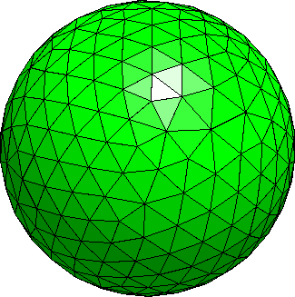
We can then use the following nmag script sphere1.py:
import sys
sys.argv.append('--clean')
import nmag
from nmag import SI
#create simulation object
sim = nmag.Simulation()
# define magnetic material
Py = nmag.MagMaterial(name = 'Py',
Ms = SI(1e6, 'A/m'),
exchange_coupling = SI(13.0e-12, 'J/m'))
# load mesh
sim.load_mesh('sphere1.nmesh.h5',
[('sphere', Py)],
unit_length = SI(1e-9, 'm'))
# set initial magnetisation
sim.set_m([1,0,0])
# set external field
sim.set_H_ext([0,0,0], SI('A/m'))
# Save and display data in a variety of ways
sim.save_data(fields='all') # save all fields spatially resolved
# together with average data
# sample demag field through sphere
for i in range(-10,11):
x = i*1e-9 #position in metres
H_demag = sim.probe_subfield_siv('H_demag', [x,0,0])
print "x =", x, ": H_demag = ", H_demag
To execute this script, we have to give its name to the nsim
executable, for example (on linux):
$ nsim sphere1.py
Some simulations produce output files which nsim will refuse to
overwrite when run for a second time. The rationale is that big
simulations may have to run for a long time and so, there should be a
safeguard against accidental destruction of data.
In order to re-run a simulation, removing all old output data files,
the extra option --clean should be given, as in:
$ nsim sphere1.py --clean
Let us discuss the sphere1.py script step by step.
First we need to import the nmag module, and any subpackages of nmag
that we want to use. (In this basic example, this is just the SI
module for dimensionful physical quantities).
import nmag
from nmag import SI
Next, we need to create a simulation object. This will contain and
provide information about our physical system.
sim = nmag.Simulation()
After importing the nmag module into Python's workspace and creating
the simulation object sim, we need to define a material using
nmag.MagMaterial. We give it a name (as a Python string) which in
this case we choose to be "Py" (a common abbreviation for
PermAlloy) and we assign a saturation magnetisation and an exchange
coupling strength.
Py = nmag.MagMaterial(name = 'Py',
Ms = SI(1e6, 'A/m',
exchange_coupling = SI(13.0e-12, 'J/m'))
The name of the material is important, as we may want to simulate
systems made up of multiple different materials, and the material name
will be used as a postfix to the name of some Fields and Subfields.
The output files will also use that name to label output data. Names
must be alphanumeric (i.e. formed exclusively out of the characters in
the set 0-9_a-zA-Z) here.
Rather than representing dimensionful physical quantities as numbers,
nmag uses a special object class, the "SI object". The underlying
rationale is that this allows automated detection of mismatches of
physical dimensions. If some physical parameter is given to nmag in a
dimension different from the expected one, nmag will detect this and
report an error. Also, any nmag output [e.g. a three-dimensional VTK
visualisation file] will provide a sufficient amount of contextual
information to clarify the physical meaning (i.e. dimensions) of
numerical data.
We thus express the saturation magnetisation in Ampere per meter (Ms
= SI(1e6,"A/m")) and the exchange coupling constant (often called A
in micromagnetism) in Joules per meter (exchange_coupling =
SI(13.0e-12, "J/m")). (Note that these are not the true physical
parameters of PermAlloy, but have been chosen ad hoc for the sake
of providing a simple example!)
The next step is to load the mesh.
sim.load_mesh('sphere1.nmesh.h5',
[('sphere', Py)],
unit_length = SI(1e-9, 'm'))
The first argument is the file name ("sphere1.nmesh.h5"). The
second argument is a list of tuples which describe the domains (also
called regions) within the mesh. In this example we have a one-element
list containing the 2-tuple ("sphere", Py). The left element of
this pair, "sphere", is a string (of the user's choice) and this
is the name given to mesh region 1 (i.e. the space occupied by all
simplices that have the region id 1 in the mesh file).
[This information is currently only used for debugging purposes (such
as when printing the simulation object).]
The second part of the tuple is the MagMaterial object that has
been created in Defining (magnetic) materials and bound to the
variable Py. This object determines the material properties of the
material in this domain; in this example, we have specified the
properties of PermAlloy.
The third argument to load_mesh is an SI object which defines what
physical distance should be associated with the length 1.0 as given in
the mesh file. In this example, the mesh has been created in
nanometers, i.e. the distance 1.0 in the mesh file should correspond
to 1 nanometer in the real world. We thus use a SI object representing
1 nm.
To set the initial magnetisation, we use the set_m method.
sim.set_m([1,0,0])
The field m describes the direction of magnetisation (as a
field of normalised vectors) whereas the
field M contains the magnetisation with its proper magnitude.
So, |M| is the saturation magnetisation (in Amperes per meter),
whereas m is dimensionless with |m|=1.0. There are different
ways to set a particular magnetisation, in the simplest case of a
homogeneously magnetised body, it is sufficient to provide the
magnetisation vector. So, in this example, we provide a unit vector
pointing in positive x-direction. (We could provide a vector with
non-normalised magnitude, which would be normalised
automatically. This is convenient for, say, setting an initial
magnetisation in the x-y-plane with a 45 degree angle towards
the x axis by specifying [1,1,0]).
We can set the external field using the set_H_ext command
sim.set_H_ext([0,0,0], SI('A/m'))
In contrast to set_m, this method takes two arguments. The first
defines numerical values for the direction and magnitude of the
external field. The second determines the meaning of these numerical
values using an SI object. Suppose we would like an external field of
1e6 A/m acting in the y-direction, then the command would read:
sim.set_H_ext([0,1e6,0],SI(1,"A/m")). However, we could also use
sim.set_H_ext([0,1,0],SI(1e6,"A/m")).
The default value for the external field is [0,0,0] A/m, so for this
example, we could have omitted the set_H_ext command altogether.
We have three different ways of extracting data from the simulation:
- saving averaged values of fields (which can be analysed later)
- saving spatially resolved fields (which can be analysed later)
- extracting field values at arbitrary positions from within the
running program
In this basic example, we demonstrate the use of all three methods:
2.1.7.1 Saving averaged data
sim.save_data()
The save_data method writes (spatial) averages of all fields (see
Fields and subfields) into a text file (which will be named
sphere1_dat.ndt, see below). This file is best analysed using the
ncol tool but can also just be read with a text editor. The format
follows OOMMF's odt file format: every row corresponds to one
snapshot of the system (see save_data).
The function can also be called with parameters to save spatially
resolved field data (see Saving spatially resolved data).
The first and second line in the data file are headers that explain
(by column) the physical quantities (and their dimensions).
The ncol tool allows to extract particular columns easily so that
these can be plotted later (useful for hysteresis loop studies). In
this example we have only one "timestep": there only is one row of
data in this file. We will therefore discuss this in more detail in a
subsequent example.
2.1.7.3 Saving spatially resolved data
The command
sim.save_data(fields='all')
will save full spatially resolved data on all fields (see Fields and
subfields) for the current configuration into a file with name
sphere1_dat.h5. (It will also save the spatially averaged values
as described in Saving averaged data.) Whenever the save_data
function is called, it will write the averaged field values into the
ndt file. This name is, by default, based on the name of the
simulation script, but can be overridden with an optional argument to
the Simulation constructor. The data in this file are kept in some
compressed binary format (built on the hdf5 standard) and can be
extracted and converted later using the nmagpp tool.
For example, we can extract the magnetisation field from this file
with the command:
$ nmagpp --dump sphere1
However, here we are interested in creating a vtk from the saved data
file for visualisation. We use:
$ nmagpp --vtk sphere1.vtk sphere1
where sphere1.vtk is the base name of the vtk file that is to be
generated.
In this manual, we use MayaVi as the visualisation tool for vtk files
but there are others available (see vtk).
Starting MayaVi with the command mayavi -d sphere1-000000.vtk will load
our simulation data. Using the pull-down menu Visualize -> Modules ->
VelocityVector will then tell MayaVi to display the magnetisation
vector field. (Likewise, we can use Visualize -> Modules -> Axes to
add a 3d coordinate system to the visualization):
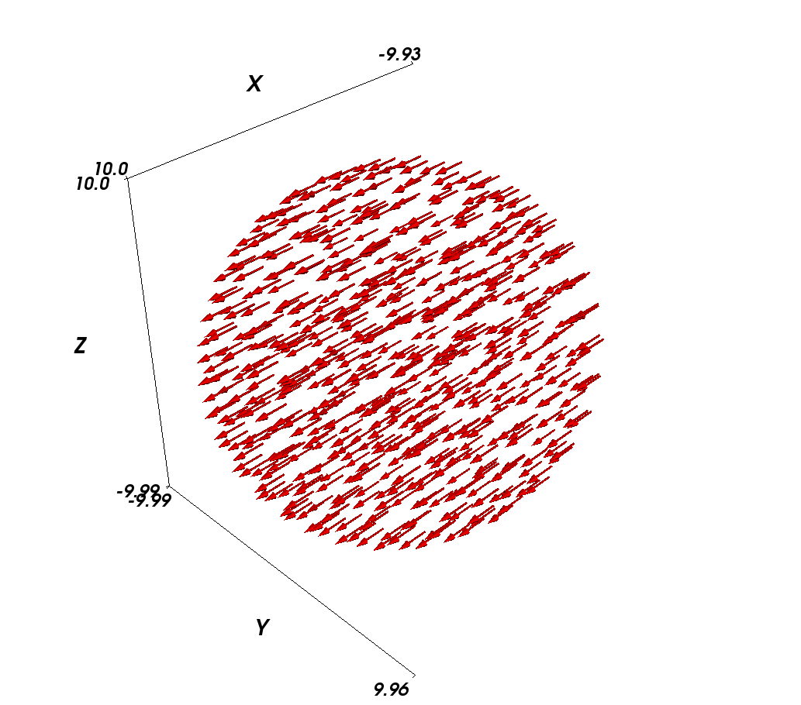
The magnetisation is pointing in positive x-direction because we
initialised the magnetisation in this orientation by issuing the
command sim.set_m([1,0,0]).
The Configure Data button in the DataVizManager section of
MayaVi's user interface allows to select:
- a vector field and
- a scalar field
which provide the data that is used for subsequent visualisation
modules. Above, we have used the m_Py vector field.
The demagnetisation field should point in the opposite direction of
the magnetisation. However, let's first create a colour-coded plot of
the scalar magnetic potential, phi, from which the demag field is
computed (by taking its negative gradient):
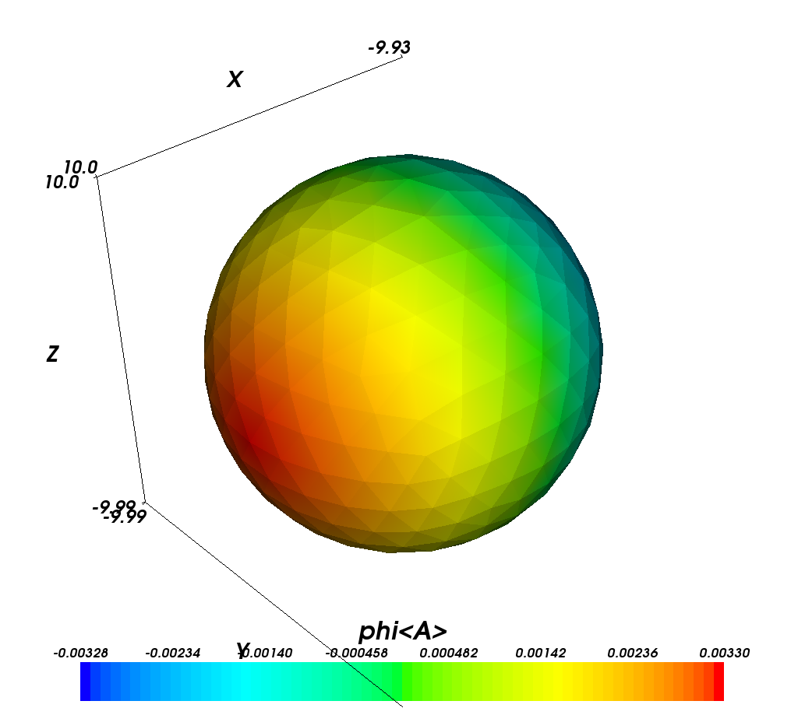
We first need to select phi as the data source for 'scalar'
visualisation modules: Through clicking on the Configure Data
button in the DataVizManager section of MayaVi's user interface, we
can select phi<A> as the data source for scalar
visualisations. (The <A> simply indicates that the units of the
potential are Ampere).
To show the scalar potential, we use the
Visualize->Module->SurfaceMap module.
We can see that the potential varies along the x-direction. The legend
at the bottom of the figure shows the colour code used. We can also
see from the legend title that the physical dimension of the potential
phi is Ampere (this is the <A>).
Unless the user specifies a particular request for physical dimensions,
the following rules apply for vtk files:
- position are given in the same coordinates as the mesh coordinates
(that is why in this example, the x, y and z axis have values going
from -10 to 10).
- all field data are given in SI units.
The next plot shows the demag field (the vectors) together with
isosurfaces of the magnetic potential:
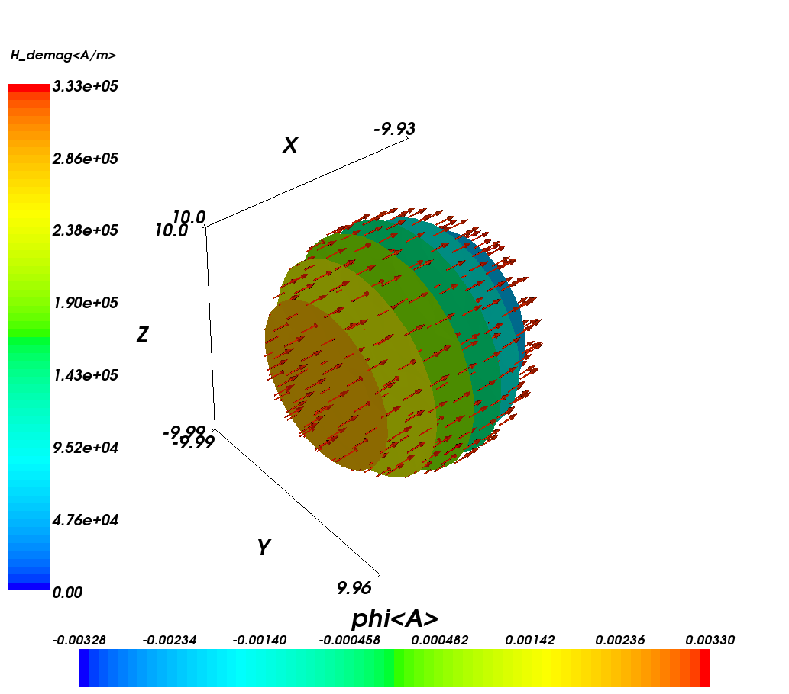
It can be seen that the isosurfaces are completely flat planes
(i.e. the potential is changing only along x) and the demagnetisation
field is perpendicular to the isosurfaces. The color bar on the left
refers to the magnitude of the demagnetisation field which is
expressed in Ampere per meter, as can be seen from the label
<A/m>. (Note that all the H_demag arrows are colored red
as they have identical length.)
This example computes the time development of the magnetisation in a
bar with (x,y,z) dimensions 30 nm x 30 nm x 100 nm. The initial
magnetisation is pointing in the [1,0,1] direction, i.e. 45 degrees
away from the x axis in the direction of the (long) z-axis. We first
show the simulation code and then discuss it in more detail.
While it is down to the mesh generation software (see also Finite
element mesh generation) to explain how to generate finite element
meshes, we briefly summarize the steps necessary to create a mesh for
this example in Netgen, and how to convert it into an nmesh mesh.
The finite element method requires the domain of interest to be
broken down into small regions. Such a subdivision of space is
known as a mesh or grid. We use Netgen to create this mesh.
Netgen reads a geometry file describing the
three-dimensional structure. To create the mesh used here,
we can start Netgen and load the geometry file by using the menu:
File-> Load Geometry. We then tell Netgen that we like the edge
length to be shorter than 3 by going to Mesh->Meshing Options->Mesh Size
and enter 3.0 in the max mesh-size box. Then a click on the
Generate Mesh button will generate the mesh. Finally, using
File->Export will save the mesh as a "neutral" file
(this is the default) under the name bar30_30_100.neutral.
(We provide a gzipped version of this file
for completeness.)
This neutral file needs to be converted into a nmesh file. We do
this using the command:
$ nmeshimport --netgen bar30_30_100.neutral bar30_30_100.nmesh.h5
By providing the .h5 extension, we tell nmeshimport to write a
compressed mesh file which is significantly smaller than an ascii
file (see mesh file size).
The generated mesh looks like this:
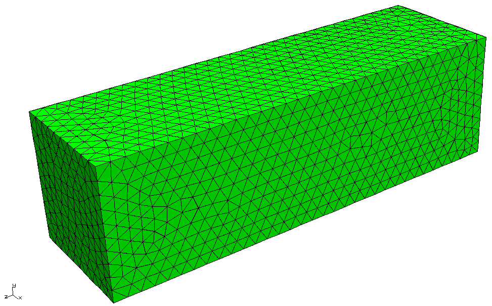
We can examine the mesh using nmeshpp to obtain information about
mesh quality, the statistical distribution of edge lengths, the
overall number of points and elements etc.
Having obtained the mesh file bar30_30_100.nmesh.h5, we can use the
program bar30_30_100.py
to run the simulation:
import nmag
from nmag import SI
mat_Py = nmag.MagMaterial(name="Py",
Ms=SI(0.86e6,"A/m"),
exchange_coupling=SI(13.0e-12, "J/m"),
llg_damping=0.5)
sim = nmag.Simulation("bar")
sim.load_mesh("bar30_30_100.nmesh.h5",
[("Py", mat_Py)],
unit_length=SI(1e-9,"m"))
sim.set_m([1,0,1])
dt = SI(5e-12, "s")
for i in range(0, 61):
sim.advance_time(dt*i) #compute time development
if i % 10 == 0: #every 10 loop iterations,
sim.save_data(fields='all') #save averages and all
#fields spatially resolved
else:
sim.save_data() #otherwise just save averages
As in Example demag field in uniformly magnetised sphere, we start
by importing nmag and creating the material object.
import nmag
from nmag import SI
mat_Py = nmag.MagMaterial(name="Py",
Ms=SI(0.86e6,"A/m"),
exchange_coupling=SI(13.0e-12, "J/m"),
llg_damping=0.5)
We set the llg_damping parameter to 0.5. As this is a
dimensionless parameter, we can pass a number. Alternatively, we may
give it as SI(0.5). (Note that in this example, we give the
appropriate physical value for the saturisation magnetisation of
PermAlloy.)
The next line creates the simulation object:
sim = nmag.Simulation("bar")
Here, we provide a name for the simulation, which is bar. This
will be used as the stem of the name of any data files that are being
written. If this name is not specified (as in Example demag field in
uniformly magnetised sphere), it defaults to the name of the file
that contains the script (but without the .py extension).
Next, we load the mesh file, and set the initial (normalised)
magnetisation to point in the [1,0,1] direction, i.e. to have
equal magnitude in the x- and z-direction and 0 in the
y-direction.
sim.load_mesh("bar30_30_100.nmesh.h5",
[("Py", mat_Py)],
unit_length=SI(1e-9,"m"))
sim.set_m([1,0,1])
This vector will automatically be normalised within nmag, so that
[1,0,1] is equivalent to the normalised vector
[0.70710678,0,0.70710678].
In this example, we would like to study a dynamic process and will ask
nmag to compute the time development over a certain amount of time
dt. The line:
dt = SI(5e-12, "s")
simply creates a SI object which represents our timescale.
We then have a Python for-loop in which i will take integer
values ranging from 0 to 60 for subsequent iterations. All indented
lines are the body of the for-loop. (In the Python programming
language, scoping is expressed through indentation rather than braces
or other types of parentheses. Text editors such as Emacs come with
built-in support for properly indenting Python code [by pressing the
Tab key on a line to be indented].)
for i in range(0, 61):
sim.advance_time(dt*i)
if i % 10 == 0:
sim.save_data(fields='all')
else:
sim.save_data()
In each iteration, we first call sim.advance_time(i*dt) which
instructs nmag to carry on time integration up to the time
i*dt.
The call to save_data will save the average data into the
bar_dat.ndt file.
The last four lines contain an if statement which is used to save
spatially resolved data every ten time steps only, and averaged data
every time step. The percent operator % computes i modulo
10. This will be 0 when i takes values 0, 10, 20, 30, ... In this
case, we call:
sim.save_data(fields='all')
which will save the (spatial) averages of all fields (going into the
bar_dat.ndt file), and the spatially resolved data for all
fields (that are saved to bar_dat.h5).
If i is not an integer multiple of 10, then the command:
sim.save_data()
is called, which only saves spatially averaged data.
2.2.3.1 Time dependent averages
We first plot the average magnetisation vector against time. To
see what data is available, we call ncol with just the name of the
simulation (which here is bar):
$ ncol bar
0: #time #<s> 0
1: id <> 1
2: step <> 0
3: stage_time <s> 0
4: stage_step <> 0
5: stage <> 0
6: E_total_Py <kg/ms^2> -0.2603465789714
7: phi <A> 0.0002507410390772
8: E_ext_Py <kg/ms^2> 0
9: H_demag_0 <A/m> -263661.6680783
10: H_demag_1 <A/m> -8.218106743355
11: H_demag_2 <A/m> -77027.641984
12: dmdt_Py_0 <A/ms> -8.250904652583e+15
13: dmdt_Py_1 <A/ms> 2.333344983225e+16
14: dmdt_Py_2 <A/ms> 8.250904652583e+15
15: H_anis_Py_0 <A/m> 0
16: H_anis_Py_1 <A/m> 0
17: H_anis_Py_2 <A/m> 0
18: m_Py_0 <> 0.7071067811865
19: m_Py_1 <> 0
20: m_Py_2 <> 0.7071067811865
21: M_Py_0 <A/m> 608111.8318204
22: M_Py_1 <A/m> 0
23: M_Py_2 <A/m> 608111.8318204
24: E_anis_Py <kg/ms^2> 0
25: E_exch_Py <kg/ms^2> 5.046530179037e-17
26: rho <A/m^2> 0.03469702141876
27: H_ext_0 <A/m> 0
28: H_ext_1 <A/m> 0
29: H_ext_2 <A/m> 0
30: H_total_Py_0 <A/m> -263661.6680783
31: H_total_Py_1 <A/m> -8.218106743352
32: H_total_Py_2 <A/m> -77027.641984
33: E_demag_Py <kg/ms^2> -0.2603465789714
34: H_exch_Py_0 <A/m> 3.301942533099e-11
35: H_exch_Py_1 <A/m> 0
36: H_exch_Py_2 <A/m> 3.301942533099e-11
37: maxangle_m_Py <deg> 0
38: localtime <> 2007/08/15-11:16:19
39: unixtime <s> 1187172979.6
The meaning of the various entries is discussed in detail in section
ncol. Here, we simply note that the column indices (given by the
number at the beginning of every line) we are most interested in are:
- 0 for the time,
- 21 for M_Py_0 which is the x-component of the magnetisation of
the Py material,
- 22 for M_Py_1 which is the y-component of the magnetisation of
the Py material, and
- 23 for M_Py_2 which is the z-component of the magnetisation of
the Py material,
We can use ncol to extract this data into a file data_M.dat which
has the time for each time step in the first column and the x, y and z
component of the magnetisation in columns 2, 3 and 4, respectively:
$ ncol bar 0 21 22 23 > data_M.txt
This creates a text file data_M.txt that
can be read by other applications to create a plot.
Note, however, that the order of the entries in the ndt file is not
guaranteed, i.e. the numbers corresponding to fields may change with
different versions of the software, or different simulations (for
example, the user may add extra fields). Therefore, the recommended
approach is to directly specify the names of the columns that are to be
extracted (i.e. time M_Py_0 M_Py_1 M_Py_2):
$ ncol bar time M_Py_0 M_Py_1 M_Py_2 > data_M.txt
We use the xmgrace command:
xmgrace -nxy data_M.txt
to create the following plot (manually adding the legend and axis labels):
2.2.3.2 Comparison with OOMMF and Magpar
We have carried out the same simulation with Magpar and OOMMF. The
following plot shows the corresponding OOMMF-curves (as spheres)
together with nmag's results. (The Magpar curve, which is not shown
here, follows the nmag data very closely.)
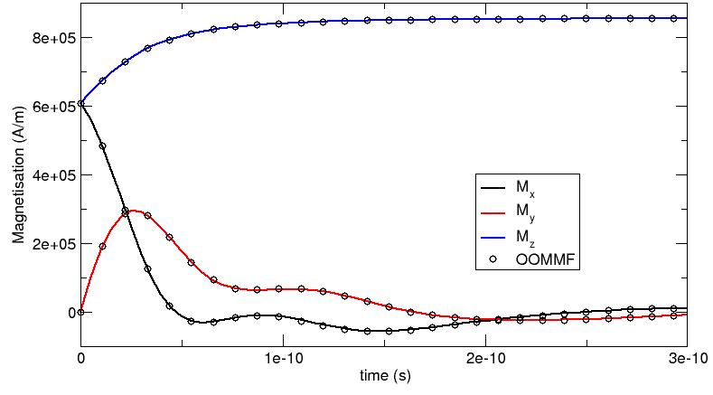
2.2.3.3 Spatially resolved fields
The command sim.save_data(fields='all') saves all fields into the
file bar_dat.h5 (as explained, the filename is composed of the name
of the simulation [here bar] and the extension _dat.h5). The
code bar30_30_100.py above calls the save_data command every 10
iterations. As every dt corresponds to 0.5 picoseconds, the
data hence is saved every 5 picoseconds.
We can confirm this by using the nmagpp command:
$ nmagpp --idlist bar
which produces the following output:
id stage step time fields
0-> 1 0 0 E_anis E_demag E_exch E_ext E_total H_anis H_demag ... phi pin rho
10-> 1 312 5e-11 E_anis E_demag E_exch E_ext E_total H_anis H_demag ... phi pin rho
20-> 1 495 1e-10 E_anis E_demag E_exch E_ext E_total H_anis H_demag ... phi pin rho
30-> 1 603 1.5e-10 E_anis E_demag E_exch E_ext E_total H_anis H_demag ... phi pin rho
40-> 1 678 2e-10 E_anis E_demag E_exch E_ext E_total H_anis H_demag ... phi pin rho
50-> 1 726 2.5e-10 E_anis E_demag E_exch E_ext E_total H_anis H_demag ... phi pin rho
60-> 1 762 3e-10 E_anis E_demag E_exch E_ext E_total H_anis H_demag ... phi pin rho
The first column is a unique identifier id for a configuration of the
system. We can use the --range argument to select entries for
further processing. The stage is only relevant for calculations of
hysteresis curves (see hysteresis example). The step is the
time-stepper iteration counter for this calculation. The time is given
in seconds (<s>). (Note the 5 pico-second interval between
entries.) The stage, step and time data is provided for
convenience. What follows is a list of fields that have been saved for
each of these configurations.
We convert the first saved time step into a vtk file
with base name bar_initial.vtk using
$ nmagpp --range 0 --vtk bar_initial.vtk bar
and we also convert the last saved time step at 300 picoseconds to a
vtk file with base name bar_final.vtk using:
$ nmagpp --range 60 --vtk bar_final.vtk bar
The actual file names that are created by these two commands are
bar_initial-000000.vtk and bar_final-000060.vtk. The appended number
is the id of the saved configuration. This is useful if one wants to create vtk files for all saved configurations. For example:
$ nmagpp --vtk bar.vtk bar
will create the files:
bar-000000.vtk
bar-000010.vtk
bar-000020.vtk
bar-000030.vtk
bar-000040.vtk
bar-000050.vtk
bar-000060.vtk
Using MayaVi, we can display this data in a variety of ways. Remember
that all field values are shown in SI units by default (see nmagpp),
and positions are as provided in the mesh file. In this case,
positions are expressed in nanometers (this comes from the
unit_length=SI(1e-9,"m") expression in the sim.load_mesh()
command.
This is the initial configuration with magnetisation pointing in the
[1,0,1] direction:
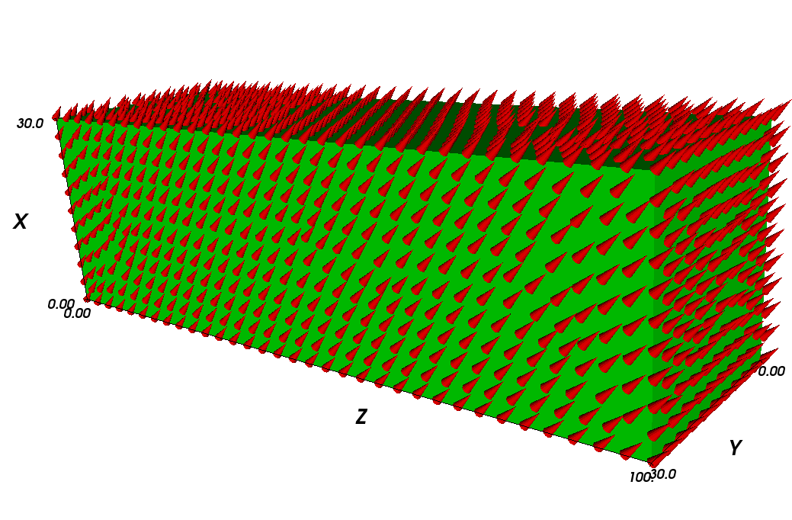
The "final" configuration shows that the magnetisation aligns along
the z-direction. The coloured surface shows the x-component of the
magnetisation (and the colorbar provides the scale). It can be seen
that the magnetisation at position z=100 nm goes into a flower state
to minimise the overall energy. (Note that, strictly speaking, this
system is not yet in a meta-stable state after 300 ps -- but already
quite close.):
Because we have saved all fields (not just the magnetisation), we can
also study other properties. For example, the following image shows
the demagnetisation field as vectors (and the legend refers to the
magnitude of the vectors), as well as the magnetic scalar potential
(as a stack of isosurfaces). Because the demagnetisation field is the
(negative) gradient of the scalar potential, the vectors are
perpendicular on the isosurfaces:
We now have seen an overview over the fundamental commands used to set
up a micromagnetic simulation and demonstrate how to advance the
configuration of the system through time. In principle, this is all
one would need to know to compute hysteresis loops and carry out most
micromagnetic computations. However, there are more advanced functions
that simplify and automatise the most frequent tasks, such as
computing a hysteresis loop.
The relax command takes the current magnetisation configuration of a
simulation and computes the time development until the torque on each
mesh site is smaller than a certain threshold. This is useful for this
particular example as we do not know for how long we need to integrate
the system until it stops in a local energy minimum configuration. We
can adjust the code of this example to make use of the relax
command (modified source code):
import nmag
from nmag import SI, every, at
mat_Py = nmag.MagMaterial( name="Py",
Ms=SI(0.86e6, "A/m"),
exchange_coupling=SI(13.0e-12, "J/m"),
llg_damping=0.5)
sim = nmag.Simulation("bar_relax")
sim.load_mesh("bar30_30_100.nmesh.h5", [("Py", mat_Py)],
unit_length=SI(1e-9, "m"))
sim.set_m([1, 0, 1])
ps = SI(1e-12,"s")
sim.relax(save = [('averages', every('time', 5*ps)),
('fields', at('convergence'))])
(Note the additions to the import statement!)
The particular relax command employed here:
sim.relax(save = [('averages', every('time',5*ps)),
('fields', at('convergence'))])
works as follows:
The argument save = [ ] tells relax to save data according to
the instructions given in the form of a python list (i.e. enclosed by
square brackets). The first relax instruction is this tuple:
('averages', every('time',5*ps)
and means that the averages should be saved every 50 picoseconds.
The syntax used here breaks down into the following parts:
- 'averages' is just the keyword (a string) to say that the
average data should be saved.
- every(...) is a special object which takes two parameters. They are here:
- 'time' to indicate that something should be done every time a certain
amount of simulated time has passed, and
- 5*ps which is the amount of time after which the data
should be saved again. This has to be a SI object, which we here
obtain by multiplying a number (5) with the SI object ps which
has been defined earlier in our example program to represent a pico-second.
- We can provide further keywords to the every object (for example
to save the data every n iteration steps we can use every(10,'step')).
Internally, the relax command uses the hysteresis command, so the documentation of
hysteresis should be consulted for a more detailed explanation of parameters.
The second relax instruction is:
('fields', at('convergence'))
which means that the fields should be saved at convergence,
i.e. when the relaxation process has finished and the magnetisation
has converged to its (meta)stable configuration:
- 'fields' is a string that indicates that we would like to save
all the defined fields.
- at('convergence') is a special object that indicates that this
should happen exactly when the relaxation process has converged.
After running this program, we can use the ncol tool to look at
the averages saved:
$ ncol bar_relax step time
gives output which starts like this:
0 0
82 5e-12
120 1e-11
146 1.5e-11
176 2e-11
201 2.5e-11
227 3e-11
248 3.5e-11
Here, we see the iterations on the left and the simulated time (in
seconds) on the right. As requested, there is one data entry
(i.e. line) every 5 picoseconds.
Note that it may happen that the system saves the data not exactly at
the requested time, i.e.:
532 6.5e-11
580 7.047908066945e-11
620 7.5e-11
The middle line shows that the data has been saved when the simulated
time was approximately 7.05e-11 seconds whereas we requested 7e-11
seconds. Such small deviations are tolerated by the system to improve
performance .
From the data saved, we can obtain the following plot:
In summary, the relax function is useful to obtain a meta-stable
configuration of the system. In particular, it will carry out the time
integration until the remaining torque at any point in the system has
dropped below a certain threshold.
If we are only interested in the final (meta-stable) configuration of
a run, we can switch off the precession term in the Laundau Lifshitz
and Gilbert equation. The MagMaterial definition in the following
example shows how to do this:
import nmag
from nmag import SI, every, at
mat_Py = nmag.MagMaterial( name="Py",
Ms=SI(0.86e6, "A/m"),
exchange_coupling=SI(13.0e-12, "J/m"),
llg_damping=0.5,
do_precession=False )
sim = nmag.Simulation("bar_relax2")
sim.load_mesh("bar30_30_100.nmesh.h5", [("Py", mat_Py)],
unit_length=SI(1e-9, "m"))
sim.set_m([1, 0, 1])
ps = SI(1e-12,"s")
sim.relax(save = [('averages', every('time', 5*ps)),
('fields', at('convergence'))])
The new option is do_precession=False in the constructor of the
PermAlloy material mat_Py. As a result, there will be no
precession term in the equation of motion:
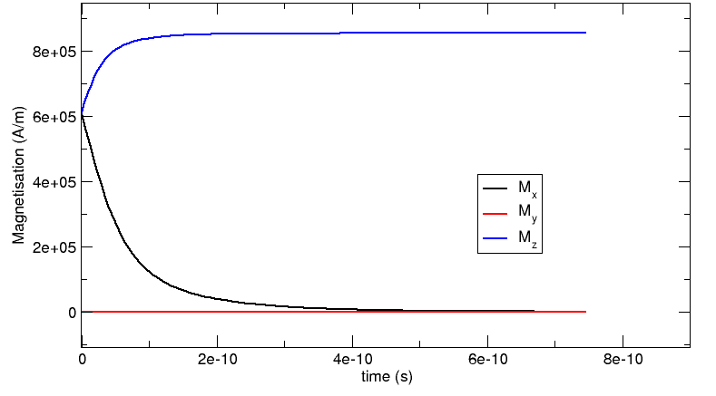
While the time-development of the system happens at the same time
scale as for the system with the precession term (see "Relaxing" the
system), the computation of the system without the precession is
significantly faster (for this example, we needed about 3500
iterations with the precession term and 1500 without it, and the
computation time scales similarly).
Note, that the ''dynamics'' shown here are of course artificial and
only used to obtain a meta-stable physical configuration more
efficiently!
Note that the execution time can generally be reduced significantly by
decreasing the tolerances for the time integrator. In short, one has
to use the set_params function (after set_m has been called).
Decreasing the requested accuracy will of course make the simulation
results less accurate but this is often acceptable. An example of how
to use the set_m function and detailed discussion of the
micromagnetic example shown in this section for a variety of tolerance
values is given in the section Example timestepper tolerances.
This example computes the hysteresis loop of an ellipsoidal magnetic
object. We use an ellipsoid whose x,y,z semi-axes
have lengths 30 nm, 10 nm and 10 nm, respectively. (The mesh is contained
in ellipsoid.nmesh.h5
and produced with Netgen from ellipsoid.geo):
This picture has been obtained by converting the mesh to a vtk file using:
$ nmeshpp --vtk ellipsoid.nmesh.h5 mesh.vtk
and subsequent visualisation with Mayavi:
$ mayavi -d mesh.vtk -m SurfaceMap
We have further added the axes within MayaVi
(Visualize->Modules->Axes), and changed the display color from blue to
red (Double lick on SurfaceMap in the selected Modules list, then
uncheck the Scalar Coloring box, click on Change Object Color
and select a suitable color).
We provide the mayavi file mesh.mv that shows the
visulisation as in the figure above. (If you want to load this file
into MayaVi, just use $ mayavi mesh.mv but make sure that
mesh.vtk is in the same directory as mayavi will need to read
this.)
To compute the hysteresis loop for the ellipsoid, we use the
script ellipsoid.py:
import nmag
from nmag import SI, at
#create simulation object
sim = nmag.Simulation()
# define magnetic material
Py = nmag.MagMaterial(name="Py",
Ms=SI(1e6,"A/m"),
exchange_coupling=SI(13.0e-12, "J/m"))
# load mesh: the mesh dimensions are scaled by 0.5 nm
sim.load_mesh("ellipsoid.nmesh.h5",
[("ellipsoid", Py)],
unit_length=SI(1e-9,"m"))
# set initial magnetisation
sim.set_m([1.,0.,0.])
Hs = nmag.vector_set(direction=[1.,0.01,0],
norm_list=[ 1.00, 0.95, [], -1.00,
-0.95, -0.90, [], 1.00],
units=1e6*SI('A/m'))
# loop over the applied fields Hs
sim.hysteresis(Hs, save=[('restart','fields', at('convergence'))])
As in the previous examples, we first need to import the modules
necessary for the simulatiofgn. at('convergence') allows us to save
the fields and the averages whenever convergence is reached.
We then define the material of the magnetic object, load the mesh and set
the initial configuration of the magnetisation as well as the
external field.
We apply the external magnetic fields in the x-direction with range of
1e6 A/m down to -1e6 A/m in steps of 0.05e6 A/m.
To convey this information efficiently to nmag, we use:
- a direction for the applied field (here just [1,0.01,0]), (note
that we have a small y-component of 1% in the applied field to break
the symmetry)
- a list of magnitudes of the field that will be multiplied with the
direction vector,
- another multiplier that defines the physical dimension of the applied fields
(here 1000kA/m, given as 1e6*SI('A/m')).
Putting all this together, we obtain this command:
Hs = nmag.vector_set(direction=[1., 0.01, 0],
norm_list=[ 1.00, 0.95, [], -1.00,
-0.95, -0.90, [], 1.00],
units=1e6*SI('A/m'))
which computes a list of vectors Hs. Each entry in the list
corresponds to one applied field.
The hysteresis command takes this list of applied fields Hs as
one input parameter, and computes the hysteresis loop for these
fields:
sim.hysteresis(Hs, save=[('restart', 'fields', at('convergence'))])
The save parameter is used to tell the hysteresis command what
data to save, and how often. We have come across this notation when
explaining the relax command in the section "Relaxing" the
system of the previous example. In the example shown here, we
request that the fields and the restart data should be saved at
the point in time where we reach convergence. (The spatially
averaged data is saved automatically to the ndt file when the
fields are saved.) This is done in a compact notation shown above
which is equivalent to this more explicit version:
sim.hysteresis(Hs,
save=[('restart', at('convergence')),
('fields', at('convergence'))])
The compact notation can be used because here we want to save
fields and restart data at the same time.
The hysteresis command computes the time development of the system
for one applied field until a convergence criterion is met. It then
proceeds to the next external field value provided in Hs.
We run the simulation as usual using:
$ nsim ellipsoid.py
If you have run the simulation before, we need to use the --clean
switch to enforce overriding of existing data files:
$ nsim ellipsoid.py --clean
The simulation should take only a few minutes (for example 3 minutes
on an Athlon64 3800+), and needs about 75MB of RAM.
If the simulation has been interrupted, it can be continued using
$ nsim ellipsoid.py --restart
Once the calculation has finished, we can plot the graph of the
magnetisation (projected along the direction of the applied field) as a
function of the applied field.
We use the ncol command to extract the data into a text file named plot.dat:
$ ncol ellipsoid H_ext_0 m_Py_0 > plot.dat
In this example, rather than using xmgrace, we show how to plot data
using Gnuplot:
$ gnuplot make_plot.gnu
The contents of the gnuplot script make_plot.gnu are:
set term postscript eps enhanced color
set out 'hysteresis.eps'
set xlabel 'Applied field H_x (A/m)'
set ylabel 'M_x / M_s'
set xrange [-1050000:1050000]
set yrange [-1.2:1.2]
plot 'plot.dat' u 1:2 ti 'ellipsoid example' w lp 3
which generates the following hysteresis loop graph:
This example is very similar to Example: Simple hysteresis loop but
computes the hysteresis loop of a smaller ellipsoidal magnetic
object. This allows to compare the results with the analytical
solution given by the Stoner-Wohlfarth model. We use an ellipsoid
whose x,y,z semi-axes have lengths 9 nm, 3 nm and 3 nm,
respectively. (The mesh is contained in ellipsoid.nmesh.h5 and produced with
Netgen from ellipsoid.geo):
To compute the hysteresis loop for the ellipsoid, we use the
script ellipsoid.py:
import nmag
from nmag import SI, at
#create simulation object
sim = nmag.Simulation()
# define magnetic material
Py = nmag.MagMaterial(name="Py",
Ms=SI(1e6,"A/m"),
exchange_coupling=SI(13.0e-12, "J/m"))
# load mesh: the mesh dimensions are scaled by 0.5 nm
sim.load_mesh("ellipsoid.nmesh.h5",
[("ellipsoid", Py)],
unit_length=SI(1e-9,"m"))
# set initial magnetisation
sim.set_m([1.,1.,0.])
Hs = nmag.vector_set(direction=[1.,1.,0.],
norm_list=[1.0, 0.995, [], -1.0,
-0.995, -0.990, [], 1.0],
units=1e6*SI('A/m'))
# loop over the applied fields Hs
sim.hysteresis(Hs, save=[('averages', at('convergence'))])
We apply external magnetic fields in [110] direction (i.e. 45 degrees
between the x and the y-axis) to this system, with strengths in the
range of 1000 kA/m down to -1000 kA/m in steps of 5 kA/m.
The save parameter is used to tell the hysteresis command what
data to save, and how often. Here, we are only interested in saving
the spatially averaged magnetisation values for every stage (i.e.
meta-stable equilibrium before the applied field is changed).
To extract the data needed for plotting the hysteresis loop
we proceed as explained in the previous
example Example: Simple hysteresis loop.
We use the ncol command and extract the data into a text file
named plot.dat:
$ ncol ellipsoid H_ext_0 H_ext_1 H_ext_2 m_Py_0 m_Py_1 m_Py_2 > plot.dat
We then use Gnuplot to plot the loop:
$ gnuplot make_plot.gnu
The gnuplot script make_plot.gnu is:
set term postscript eps enhanced color
set out 'hysteresis.eps'
set xlabel 'Applied field (kA/m)'
set ylabel 'M / Ms'
versor_x = 1/sqrt(2)
versor_y = 1/sqrt(2)
versor_z = 0.0
scalar_prod(x1,x2,x3) = x1*versor_x + x2*versor_y + x3*versor_z
set mxtics 5 # minor tics and grid
set ytics 1
set mytics 5
set grid xtics ytics mxtics mytics lt -1 lw 0.5, lt 0
plot [-1050:1050] [-1.2:1.2] \
'plot.dat' u (scalar_prod($1,$2,$3)/1000):(scalar_prod($4,$5,$6)) t 'Stoner-Wohlfarth' w lp 4
Note that within the gnuplot file, we project the magnetisation data
in the [1,1,0] direction because the applied field was acting
in this direction. We obtain this hysteresis loop:
The coercive field, which is located somewhere between 165 and 170
kA/m, can now be compared with the analytically known result for this
particular system. To compute it, we need the demagnetizing factors
Nx, Ny, Nz of the particle along the main axes. Since we deal with a
prolate ellipsoid where two of the axes have the same dimension (y and
z in this case), it is sufficient to compute the factor along the
longest axis (x axis). The other two are easily derived from the
relation Nx + Ny + Nz = 1. The expression to compute Nx is
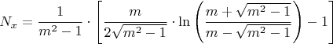
where we call the length of the x semi-axis a, the length of the y
(or z) semi-axis c, and take m to be the ratio
m = a/c. Here, the value of Nx is therefore 0.1087, so we have
Ny = Nz = 0.4456. With these values the shape anisotropy is easily
computed according to the expression:
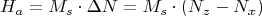
This gives Ha = 337 kA/m in the case of Ms = 1000 kA/m. The final
step is to compute the coercive field hc using this analytical
(Stoner-Wohlfarth) result:
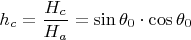
Here, theta_0 is the angle between the easy-axis of the particle
(x-axis in our case) and the direction of the applied
field. Substituting theta_0 = 45 (degrees) in the formula, we obtain
hc = 0.5, that is Hc = 0.5 * Ha = 168 kA/m. As we have seen before,
the simulated hysteresis loop gives a value between 165 and 170 kA/m,
which is in agreement with the analytical solution.
Note that this simulation is relatively slow due to a number of
constraints: to get good Stoner-Wolfarth behaviour, we need to
describe the shape of the ellipsoid well, and thus need a small
edgelength when we generate the mesh. We further need uniform
behaviour of the magnetisation, which limits the overall size of the
ellipsoid. A general property of micromagnetic simulations is that the
associated differential equations get stiffer if the edge lengths (or
more generally: distances between neighbouring degrees of freedom)
become smaller. Stiffer systems of differential equations are harder
to intergrate, and thus take more time.
This example computes the hysteresis loop of a flat disc magnetised
along a direction orthogonal to the main axis. In comparison to the
previous Stoner-Wohlfarth example, it demonstrates the use of a
more complex sequence of applied fields.
We use a disc 20 nm thick and 200 nm in diameter for this example (the
mesh is contained in nanodot1.nmesh.h5
which is created from the_nanodot.geo with Netgen):
To compute the hysteresis loop for the disc, we use the script
nanodot1.py:
import nmag
from nmag import SI, at
#create simulation object
sim = nmag.Simulation()
# define magnetic material
Py = nmag.MagMaterial( name="Py",
Ms=SI(795774,"A/m"),
exchange_coupling=SI(13.0e-12, "J/m")
)
# load mesh: the mesh dimensions are scaled by 100nm
sim.load_mesh( "nanodot1.nmesh.h5",
[("cylinder", Py)],
unit_length=SI(100e-9,"m")
)
# set initial magnetisation
sim.set_m([1.,0.,0.])
Hs = nmag.vector_set( direction=[1.,0.,0.],
norm_list=[1000.0, 900.0, [],
95.0, 90.0, [],
-100.0, -200.0, [],
-1000.0, -900.0, [],
-95.0, -90.0, [],
100.0, 200.0, [], 1000.0],
units=1e3*SI('A/m')
)
# loop over the applied fields Hs
sim.hysteresis(Hs,
save=[('averages', 'fields', 'restart', at('convergence'))]
)
We assume that the previous example have been sufficiently instructive
to explain the basic steps such as importing nmag, creating a
simulation object, defining the material and leading the mesh. Here,
we focus on the hysteresis command:
We would like to apply fields ranging from [1e6, 0, 0] A/m to
[100e3, 0, 0] A/m in steps of 100e3 A/m. Then, from [95e3,
0, 0] A/m to [-95e3, 0, 0] A/m we would like to use a smaller
step size of 5e3 A/m (to resolve this applied field range better).
This will take us through zero applied field ([0,0,0] A/m). Now,
symmetrically to the positive field values, we would like to use a
step size of 100e3 A/m again to go from [-100e3, 0, 0] A/m to
[-1e6, 0, 0] A/m. At this point, we would like to reverse the whole
sequence (to sweep the field back to the initial value).
The information we need for the hysteresis command includes:
a direction for the applied field (here just [1,0,0]),
a list of magnitudes of the field (this is the norm_list) that
will be interpreted, and then multiplied with the direction vector,
As in the Example: Simple hysteresis loop and in the
Stoner-Wohlfarth example, we employ a special notation for
ranges of field strengths understood by nmag.vector_set. The
expression:
[1000.0, 900.0, [], 95.0]
means that we start with a magnitude of 1000, the next magnitude is
900. The empty brackets ([]) indicate that this sequence should
be continued (i.e. 800, 700, 600, 500, 400, 300, 200, 100) up to but
not beyond the next value given (i.e. 95).
another multiplier that defines the strength of the applied fields
(here, 1e3*SI('A/m')).
The corresponding command is:
Hs = nmag.vector_set( direction=[1,0,0],
norm_list=[1000.0, 900.0, [],
95.0, 90.0, [],
-100.0, -200.0, [],
-1000.0, -900.0, [],
-95.0, -90.0, [],
100.0, 200.0, [], 1000.0],
units=1e6*SI('A/m')
)
which computes a list of vectors Hs. The hysteresis command takes
this list of applied fields Hs as one input parameter, and will
compute the hysteresis loop for these fields:
sim.hysteresis(Hs,
save=[('averages', 'fields', 'restart', at('convergence'))]
)
Again, the second parameter (save) is used to tell the hysteresis
command what data to save, and how often. We request that the
averages of the fields, the fields and the restart data
should be saved at those points in time where we reach convergence.
(See also restart example).
Once the calculation has finished, we can plot the hysteresis loop,
i.e. the graph of the magnetisation computed along the direction of
the applied field as a function of the applied field strength.
We use the ncol command to extract the data into a text file plot.dat:
$ ncol nanodot1 H_ext_0 m_Py_0 > plot.dat
This file starts as follows:
1000000 0.9995058139817
1000000 0.9995058139817
900000 0.9994226410102
900000 0.9994226410102
800000 0.9993139080655
We use Gnuplot to plot the hysteresis loop:
$ gnuplot make_plot.gnu
using the gnuplot script make_plot.gnu:
set term postscript eps enhanced color
set out 'nanodot_hyst.eps'
set xlabel 'Applied field (A/m)'
set ylabel 'M / Ms'
set xrange [-1.2e6:1.2e6]
set yrange [-1.2:1.2]
plot 'plot.dat' u 1:2 ti 'nmag' with linespoints lw 3 pt 5
The resulting graph is:
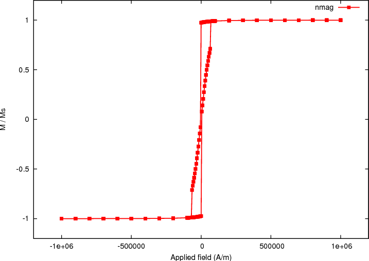
and the comparison with the Magpar data, obtained with the
script make_comparison_plot.gnu:
set term postscript eps enhanced color
set out 'nanodot_comparison_hyst.eps'
set xlabel 'Applied field (kA/m)'
set ylabel 'M / Ms'
set xrange [-0.2e3:0.2e3]
set yrange [-1.2:1.2]
plot 'plot.dat' u ($1/1000):2 ti 'nmag' w lp 3, 'magpar.dat' u 1:2 ti 'magpar' w p 4
is shown here (note that the Magpar computation only shows half of
the hysteresis loop.):
Here we can see a slight difference between nmag and Magpar in the
location of the switching point, probably due to different tolerances
in both programs when determining time integrator convergence.
This example computes the evolution of a vortex in a flat cylinder
magnetised along a direction orthogonal to the main axis.
We use the same geometry as in the Hysteresis loop for thin
disk example: a flat cylinder, 20 nm thick and 200 nm in diameter (the mesh
is contained in nanodot.nmesh.h5):
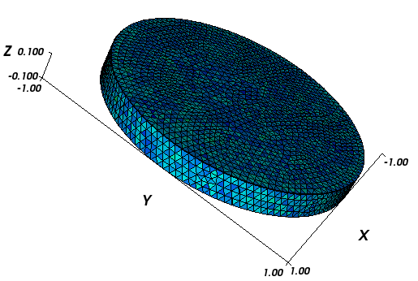
To simulate the magnetised disc, we use the following
script (nanodot.py):
import nmag
from nmag import SI, at
#create simulation object
sim = nmag.Simulation()
# define magnetic material
Py = nmag.MagMaterial( name="Py",
Ms=SI(795774,"A/m"),
exchange_coupling=SI(13.0e-12, "J/m")
)
# load mesh: the mesh dimensions are scaled by 100nm
sim.load_mesh( "../example_vortex/nanodot.nmesh.h5",
[("cylinder", Py)],
unit_length=SI(100e-9,"m")
)
# set initial magnetisation
sim.set_m([1.,0.,0.])
Hs = nmag.vector_set( direction=[1.,0.,0.],
norm_list=[12.0, 7.0, [], -200.0],
units=1e3*SI('A/m')
)
# loop over the applied fields Hs
sim.hysteresis(Hs,
save=[('averages', at('convergence')),
('fields', at('convergence')),
('restart', at('convergence'))
]
)
We would like to compute the magnetisation behaviour in the applied
fields ranging from [12e3, 0, 0] A/m to [-200e3, 0, 0] A/m in
steps of -5e3 A/m. The command for this is:
Hs = nmag.vector_set( direction=[1,0,0],
norm_list=[12.0, 7.0, [], -200.0],
units=1e3*SI('A/m')
)
sim.hysteresis(Hs,
save=[('averages', at('convergence')),
('fields', at('convergence')),
('restart', at('convergence'))
]
)
The ncol command allows us to extract the data and we redirect it to
a text file with name nmag.dat:
$ ncol nanodot H_ext_0 m_Py_0 > nmag.dat
Plotting the data with Gnuplot:
$ gnuplot make_comparison_plot.gnu
which uses the script in make_comparison_plot.gnu:
set term postscript eps enhanced color
set out 'nanodot_evo.eps'
set xlabel 'Applied field (kA/m)'
set ylabel 'M / M_s'
plot [-250:50] [-1.2:1.2] 'magpar.dat' u 2:3 ti 'magpar' w lp 4 , 'nmag.dat' u ($1/1000):2 ti 'nmag' w lp 3
The resulting graph is shown here:
and we can see that the results from nsim match those from magpar
. The magnetisation configurations during the switching process are
shown in the following snapshots:
We see that during magnetisation reversal a vortex nucleates on the
boundary of the disc when the field is sufficiently decreased from its
saturation value. As the field direction is aligned with the x-axis,
the vortex appears in the disc region with the largest y component,
and it moves downwards towards the centre along the y-axis. With a
further decrease of the applied field the vortex moves towards the
opposite side of the disc with respect to the nucleation position, and
it is eventually expelled when the magnetisation aligns with the field
direction over all the disc.
There are two basic techniques to modify the magnetisation: on the one
hand, we can use the set_m method to replace the current
magnetisation configuration with a new one. We can use set_m to specify
both homogeneous (see Setting the initial magnetisation)
and non-homogeneous magnetisations (see the Spin-waves example).
Alternatively, we can selectively change magnetic moments at individual mesh sites.
This example demonstrates how to use the latter technique.
The basics of this system are as in Example: Demag field in uniformly
magnetised sphere: we study a ferromagnetic sphere with initially
homogeneous magnetisation. The corresponding script file is
sphere_manipulate.py
import nmag
from nmag import SI
# Create simulation object
sim = nmag.Simulation()
# Define magnetic material
Py = nmag.MagMaterial(name="Py",
Ms=SI(1e6, "A/m"),
exchange_coupling=SI(13.0e-12, "J/m"))
# Load mesh
sim.load_mesh("sphere1.nmesh.h5", [("sphere", Py)], unit_length=SI(1e-9, "m"))
# Set initial magnetisation
sim.set_m([1, 0, 0])
# Set external field
sim.set_H_ext([0, 0, 0], SI("A/m"))
# Save and display data in a variety of ways
# Step 1: save all fields spatially resolved
sim.save_data(fields='all')
# Step 2: sample demag field through sphere
for i in range(-10, 11):
x = i*1e-9 # position in metres
H_demag = sim.probe_subfield_siv('H_demag', [x, 0, 0])
print "x =", x, ": H_demag = ", H_demag
# Step 3: sample exchange field through sphere
for i in range(-10, 11):
x = i*1e-9 # position in metres
H_exch_Py = sim.probe_subfield_siv('H_exch_Py', [x, 0, 0])
print "x =", x, ": H_exch_Py = ", H_exch_Py
# Now modify the magnetisation at position (0,0,0) (this happens to be
# node 0 in the mesh) in steps 4 to 6:
# Step 4: request a vector with the magnetisation of all sites in the mesh
myM = sim.get_subfield('m_Py')
# Step 5: We modify the first entry:
myM[0] = [0, 1, 0]
# Step 6: Set the magnetisation to the new (modified) values
sim.set_m(myM)
# Step 7: saving the fields again (so that we can later plot the demag
# and exchange field)
sim.save_data(fields='all')
# Step 8: sample demag field through sphere (as step 2)
for i in range(-10, 11):
x = i*1e-9 # position in metres
H_demag = sim.probe_subfield_siv('H_demag', [x, 0, 0])
print "x =", x, ": H_demag = ", H_demag
# Step 9: sample exchange field through sphere (as step 3)
for i in range(-10, 11):
x = i*1e-9 # position in metres
H_exch_Py = sim.probe_subfield_siv('H_exch_Py', [x, 0, 0])
print "x =", x, ": H_exch_Py = ", H_exch_Py
To execute this script, we have to give its name to the nsim
executable, for example (on linux):
$ nsim sphere_manipulate.py
After having created the simulation object, defined the material,
loaded the mesh, set the initial magnetisation and the external field,
we save the data the first time (Step 1).
We could visualise the magnetisation and all other fields as described
in Example: Demag field in uniformly magnetised sphere, and would
obtain the same figures as shown in section
Saving spatially resolved data.
In step 2, we probe the demag field at positions along a line going
from [-10,0,0]nm to [10,0,0]nm, and then print the values. This
produces the following output:
x = -1e-08 : H_demag = None
x = -9e-09 : H_demag = [-329656.18892701436, 131.69946810517845, 197.13873034397167]
x = -8e-09 : H_demag = [-329783.31649797881, 68.617197264295427, 140.00328871543459]
x = -7e-09 : H_demag = [-329842.17628131888, 183.37401011699876, 163.01612229436262]
x = -6e-09 : H_demag = [-329904.84956877632, 133.62473797637142, 74.090532749764847]
x = -5e-09 : H_demag = [-329974.43178624194, 85.517390832982983, -13.956465964930704]
x = -4e-09 : H_demag = [-330002.69224229571, 64.187663119270084, -30.832135394870004]
x = -3e-09 : H_demag = [-330006.79488959321, 25.479055440690821, -61.958073893954818]
x = -2e-09 : H_demag = [-330020.18327401817, 11.70722487517595, -58.143562276077219]
x = -1e-09 : H_demag = [-330025.52325345919, -5.7120648683347452, -52.237341988696294]
x = 0.0 : H_demag = [-330028.67095553532, -25.707310077918752, -46.346108473560378]
x = 1e-09 : H_demag = [-330058.98559210222, -37.699378078580203, -41.167364094137213]
x = 2e-09 : H_demag = [-330089.30022866925, -49.691446079241658, -35.988619714714041]
x = 3e-09 : H_demag = [-330145.36618529289, -63.819285767062581, -22.213920341440794]
x = 4e-09 : H_demag = [-330220.13307247689, -76.54950394725968, -5.0509172407556262]
x = 5e-09 : H_demag = [-330298.69089200837, -90.534514175273259, 13.57279800234617]
x = 6e-09 : H_demag = [-330375.34327985492, -117.01128011426778, 35.262477275758371]
x = 7e-09 : H_demag = [-330415.38940687838, -123.68558207391983, 60.580352625726341]
x = 8e-09 : H_demag = [-330474.37719032855, -112.22952205433305, 106.13032196062491]
x = 9e-09 : H_demag = [-330499.64039893239, -69.97070465326442, 160.41688110297264]
x = 1e-08 : H_demag = [-330518.649930441, -26.536490670368085, 212.32392103651733]
The data is approximately 1/3 Ms = 333333 (A/m) in the direction of the
magnetisation, and approximately zero in the other directions, as we
would expect in a homogeneously magnetised sphere. The deviations we
see are due to (i) the shape of the sphere not being perfectly
resolved (ie we actually look at the demag field of a polyhedron)
and (ii) numerical errors.
In step 3, we probe the exchange field along the same line. The
exchange field is effectively zero because the magnetisation is
pointing everywhere in the same direction:
x = -1e-08 : H_exch_Py = None
x = -9e-09 : H_exch_Py = [-1.264324643856989e-09, 0.0, 0.0]
x = -8e-09 : H_exch_Py = [-2.0419540595507732e-10, 0.0, 0.0]
x = -7e-09 : H_exch_Py = [-1.4334754136843496e-09, 0.0, 0.0]
x = -6e-09 : H_exch_Py = [-2.7214181426130964e-10, 0.0, 0.0]
x = -5e-09 : H_exch_Py = [1.6323042074911775e-09, 0.0, 0.0]
x = -4e-09 : H_exch_Py = [-1.6243345875473033e-09, 0.0, 0.0]
x = -3e-09 : H_exch_Py = [-5.6526341264934703e-09, 0.0, 0.0]
x = -2e-09 : H_exch_Py = [-6.1145979552370084e-09, 0.0, 0.0]
x = -1e-09 : H_exch_Py = [-3.0929969691649876e-09, 0.0, 0.0]
x = 0.0 : H_exch_Py = [9.2633407053741312e-10, 0.0, 0.0]
x = 1e-09 : H_exch_Py = [1.9476821552904271e-09, 0.0, 0.0]
x = 2e-09 : H_exch_Py = [2.9690302400434413e-09, 0.0, 0.0]
x = 3e-09 : H_exch_Py = [2.6077357277001043e-09, 0.0, 0.0]
x = 4e-09 : H_exch_Py = [1.5836815585162886e-09, 0.0, 0.0]
x = 5e-09 : H_exch_Py = [1.6602158583197139e-09, 0.0, 0.0]
x = 6e-09 : H_exch_Py = [1.8844573960991853e-09, 0.0, 0.0]
x = 7e-09 : H_exch_Py = [-6.2460015649740799e-09, 0.0, 0.0]
x = 8e-09 : H_exch_Py = [-1.1231714572170603e-08, 0.0, 0.0]
x = 9e-09 : H_exch_Py = [-7.3643182171284044e-09, 0.0, 0.0]
x = 1e-08 : H_exch_Py = [-3.4351784609779937e-09, 0.0, 0.0]
Note that the subfield name we are probing for the exchange field is
H_exch_Py whereas the subfield name we used to probe the demag
field is H_demag (without the extension _Py. The reason for
this is that the exchange field is a something that is associated with
a particular material (here Py) whereas there is only one demag field
that is experienced by all materials (see also Fields and subfields).
In step 4, we use the get_subfield command. This will return a
(numpy) array that contains one 3d vector for every site of the
finite element mesh.
In step 5, we modify the first entry in this array (which has index
0), and set its value to [0,1,0]. Whereas the magnetisation is
pointing everywhere in [1,0,0] (because we have used the set_m
command in the very beginning of the program, it is now pointing in
the [0,1,0] at site 0.
The information, which site corresponds to which entry in the data
vector, that we have obtained using get_subfield, can be retrieved from
get_subfield_sites. Correspondingly, the position of the sites can be
obtained using get_subfield_positions.
We now need to set this modified magnetisation vector (Step 6) using
the set_m command.
If we save the data again to the file (Step 7), we can subsequently
convert this to a vtk file (using, for example, nmagpp --vtk data
sphere_manipulate) and visualise with mayavi:
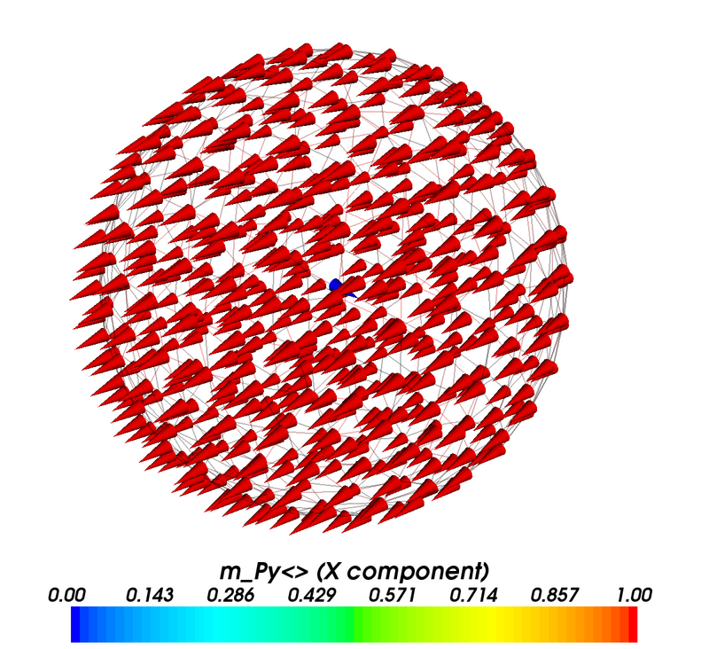
We can see one blue cone in the centre of the sphere - this is the
one site that he have modified to point in the y-direction (whereas all
other cones point in the x-direction).
As before, we can probe the fields along a line through the center of
the sphere (Step 8). For the demag field we obtain:
x = -1e-08 : H_demag = None
x = -9e-09 : H_demag = [-333816.99138074159, -1884.643376396662, 16.665519199152595]
x = -8e-09 : H_demag = [-334670.87148225965, -2293.608410913705, -102.38526828192296]
x = -7e-09 : H_demag = [-335258.77403632947, -3061.1708540342884, -532.73877752122235]
x = -6e-09 : H_demag = [-339506.72150998382, -5316.1506383768137, -969.36630578549921]
x = -5e-09 : H_demag = [-344177.83909963415, -8732.9787600552572, -1610.433091871927]
x = -4e-09 : H_demag = [-344725.75257842313, -16708.164927667149, -5224.2484897904633]
x = -3e-09 : H_demag = [-337963.49070659198, -24567.078937669514, -3321.016613832679]
x = -2e-09 : H_demag = [-321612.85117992124, -30613.873989917105, -1385.6383061516099]
x = -1e-09 : H_demag = [-298312.3363571504, -41265.117003123923, 636.60703829516081]
x = 0.0 : H_demag = [-273449.78240732534, -52534.176864875568, 2793.5027588779139]
x = 1e-09 : H_demag = [-293644.21931918303, -39844.049389551074, 4310.6449471266505]
x = 2e-09 : H_demag = [-313838.65623104072, -27153.921914226579, 5827.7871353753881]
x = 3e-09 : H_demag = [-330296.09687372146, -21814.293451835449, 5525.7290665358933]
x = 4e-09 : H_demag = [-343611.94111195666, -18185.932406317523, 4931.5464761658959]
x = 5e-09 : H_demag = [-348062.40814087034, -11029.603829202088, 3781.8263522408147]
x = 6e-09 : H_demag = [-342272.36888512014, -6604.210117819096, 50.151907623841332]
x = 7e-09 : H_demag = [-338716.66400897497, -3860.7761876767272, 485.90273674867018]
x = 8e-09 : H_demag = [-335656.89887674141, -2610.0345208853882, 586.74812908870092]
x = 9e-09 : H_demag = [-334985.59512328985, -2169.9546280837162, 542.76746044672041]
x = 1e-08 : H_demag = [-334441.59096545313, -1634.8337299563193, 627.17874011463311]
The change of the magnetisation at position [0,0,0] from [1,0,0] to
[0,1,0] has reduced the x-component of the demag field somewhat around
x=0, and has introduced a significant demag field in the -y direction
around x=0.
Looking at the exchange field (Step 9):
x = -1e-08 : H_exch_Py = None
x = -9e-09 : H_exch_Py = [-1.264324643856989e-09, 0.0, 0.0]
x = -8e-09 : H_exch_Py = [-2.0419540595507732e-10, 0.0, 0.0]
x = -7e-09 : H_exch_Py = [-1.4334754136843496e-09, 0.0, 0.0]
x = -6e-09 : H_exch_Py = [-2.7214181426130964e-10, 0.0, 0.0]
x = -5e-09 : H_exch_Py = [1.6323042074911775e-09, 0.0, 0.0]
x = -4e-09 : H_exch_Py = [-153858.81305452777, 153858.81305452611, 0.0]
x = -3e-09 : H_exch_Py = [-972420.67935341748, 972420.67935341166, 0.0]
x = -2e-09 : H_exch_Py = [-2445371.8369108676, 2445371.8369108611, 0.0]
x = -1e-09 : H_exch_Py = [5283169.701234119, -5283169.7012341227, 0.0]
x = 0.0 : H_exch_Py = [15888993.991894867, -15888993.991894867, 0.0]
x = 1e-09 : H_exch_Py = [8434471.7912872285, -8434471.7912872266, 0.0]
x = 2e-09 : H_exch_Py = [979949.59067958547, -979949.59067958279, 0.0]
x = 3e-09 : H_exch_Py = [-1112837.3087986181, 1112837.3087986207, 0.0]
x = 4e-09 : H_exch_Py = [-193877.66176242317, 193877.6617624248, 0.0]
x = 5e-09 : H_exch_Py = [1.6602158583197139e-09, 0.0, 0.0]
x = 6e-09 : H_exch_Py = [1.8844573960991853e-09, 0.0, 0.0]
x = 7e-09 : H_exch_Py = [-6.2460015649740799e-09, 0.0, 0.0]
x = 8e-09 : H_exch_Py = [-1.1231714572170603e-08, 0.0, 0.0]
x = 9e-09 : H_exch_Py = [-7.3643182171284044e-09, 0.0, 0.0]
x = 1e-08 : H_exch_Py = [-3.4351784609779937e-09, 0.0, 0.0]
We can see that the exchange field is indeed very large around x=0.
Note that one of the fundamental problem of micromagnetic simulations
is that the magnetisation must not vary significantly from one site to
another. In this example, we have manually violated this requirement
only to demonstrate how the magnetisation can be modified, and to see that
this is reflected in the dependant fields (such as demag and exchange)
immediately.
The basics of this file are as in Example: Demag field in uniformly
magnetised sphere: a ferromagnetic sphere is studied, and initially
configured to have homogeneous magnetisation.
Here is the source code of sphere_ipython.py
import nmag
from nmag import SI
# Create simulation object
sim = nmag.Simulation()
# Define magnetic material
Py = nmag.MagMaterial(name="Py",
Ms=SI(1e6,"A/m"),
exchange_coupling=SI(13.0e-12, "J/m"))
# Load mesh
sim.load_mesh("sphere1.nmesh.h5", [("sphere", Py)], unit_length=SI(1e-9,"m"))
# Set initial magnetisation
sim.set_m([1, 0, 0])
# Activate interactive python session
nmag.ipython()
print "Back in main code"
To execute this script, we have to give its name to the nsim
executable, for example (on linux):
$ nsim sphere_ipython.py
The new command appearing here is:
nmag.ipython()
This calls an interactive python interpreter (this is like the
standard ipython interpreter called from the command prompt).
Once we are "inside" this ipython interpreter, we can interactively work with
the simulation object. We demonstrate this with the transcript of such
a session:
$ nsim sphere_ipython.py
<snip>
In [1]: sim.get_subfield("H_demag")
Out[1]:
array([[ -3.30028671e+05, -2.57073101e+01, -4.63461085e+01],
[ -3.30518650e+05, -2.65364907e+01, 2.12323921e+02],
[ -3.30380750e+05, -1.34382835e+02, 1.94635283e+01],
...,
[ -3.30063839e+05, 4.56312711e+01, -1.31204248e+02],
[ -3.30056243e+05, -3.23341645e+01, -2.26732582e+02],
[ -3.29950815e+05, 4.44150291e+01, -5.41700794e+01]])
In [2]: sim.set_m([0,0,1])
In [3]: sim.get_subfield("H_demag")
Out[3]:
array([[ -6.86773473e+01, 4.44496808e+01, -3.30084368e+05],
[ -2.83792944e+02, 1.78935681e+02, -3.30268314e+05],
[ -2.04396266e+02, 2.48374212e+02, -3.30180923e+05],
...,
[ -1.02055030e+02, -9.53215211e+01, -3.30239401e+05],
[ 1.94875407e+02, 1.22757584e+02, -3.29771010e+05],
[ 6.16259262e+01, 1.66071597e+02, -3.29848851e+05]])
Note that within ipython, one can just press the TAB key to
autocomplete object names, functions and commands.
You can leave the ipython environment by pressing CTRL+D. For the
script shown here, this will print Back in main code before the
end of the script is reached. The ipython() command is
occasionally a handy debugging feature: in order to investigate the
behaviour of the system "on the spot", one can insert an ipython call
into the script which will open an interactive command line.
In this example we show how to pin (i.e. fix) magnetisation
in certain parts of a material.
import nmag
from nmag import SI, si
# Create simulation object
sim = nmag.Simulation()
# Define magnetic material: PermAlloy
Py = nmag.MagMaterial(name="Py",
Ms=SI(0.86e6, "A/m"),
exchange_coupling=SI(13.0e-12, "J/m"))
# Load mesh
sim.load_mesh("sphere1.nmesh.h5", [("sphere", Py)], unit_length=SI(1e-9, "m"))
# Set initial magnetisation to +x direction
sim.set_m([1, 0, 0])
# Pin magnetisation at center in radius of 4e-9m
def pin_at_center((x, y, z)):
if (x*x + y*y + z*z) < (4e-9)*(4e-9):
return 0.0 # Inside the 4nm sphere -> pin
else:
return 1.0 # Outside -> do not pin
sim.set_pinning(pin_at_center)
# Apply external field in +y direction
unit = 0.5*si.Tesla/si.mu0 # 500mT in A/m
sim.set_H_ext([0*unit, 1*unit, 0*unit])
# Relax the magnetisation
sim.relax()
In order to allow the user to fix the magnetisation, nmag provides a
scalar field, the so-called pinning field: its value at each site is
used as a scale factor for dm/dt, hence by setting it to 0 at
certain locations of the mesh we can force magnetisation to remain
constant at these locations for the entire simulation.
We set the pinning field using set_pinning (which is used like
set_m and set_H_ext, except that it is a scalar field whereas the
latter are vector fields) such that magnetisation is fixed at sites
with distance less than 4 nm from the sphere's center. First we define
a Python function which we decide to call pin_at_center:
def pin_at_center((x, y, z)):
if (x*x + y*y + z*z) < (4e-9)*(4e-9):
return 0.0
else:
return 1.0
The function is called for each site of the mesh
and receives the site position as an argument,
a 3-tuple (x, y, z) containing the three
components x, y and z (three floating point numbers),
given in metres.
The function returns either 0.0 (which means the magnetisation
at this position is pinned) or 1.0 (in which case there is no pinning),
for the given position vector.
The formula in the if statement simply evaluates the magnitude
of the vector (x, y, z) by squaring each component.
This number is then compared against (4nm)^2.
As a result, the magnetisation is pinned at all the mesh nodes that are
located within a sphere with center (0, 0, 0) and radius 4 nm.
All the nodes that are located outside this sphere can change
their magnetisation as usual.
Second, we need to tell nmag that it should use this function to
decide where the magnetisation should be pinned:
sim.set_pinning(pin_at_center)
Note the slightly counterintuitive fact that value 1 means "no pinning".
Finally we apply an external field of 0.5 T in +y direction, and use
relax to compute the equilibrium configuration.
The relax command:
sim.relax()
will save the fields and averages at convergence (this is the default
of the relax command).
After running the example via nsim sphere.py we convert the equilibrium
data to VTK format:
$ nmagpp --vtk=sphere.vtk sphere
We would first like to verify that the pinning field has been set up
properly. Hence we use MayaVi to visualise it by showing an
isosurface of the pinning field (shown in blue), together with the
magnetisation vector field.
The blue blob in the center of the sphere is the collection of those
tetrahedra that have corners just inside the 4nm sphere. Because we
have not generated the mesh to have nodes coinciding with the 4nm
sphere, the shape of the blue region is not particularly spherical.
In the above diagram, we also see the magnetisation vectors of the
final configuration. Their colour corresponds to the pinning field at
their location. It can be seen that the blue magnetisation vectors
emerging from the central region of the sphere are all pointing
(strictly) in the x-direction. The magnetisation vectors outside the
blue sphere are coloured red. The applied field drives these vectors
to point into the y-direction. However, the magnetisation in the
centre is pinned and the exchange interaction requires a gradual
spatial change of magnetisation. This explains the spatial variation
of the magnetisation.
The next figure shows the same data as the last figure but in addition a
ScalarCutPlane (in MayaVi terminology) has been introduced which
is coloured according to the x-component of the magnetisation. Red
corresponds to 1.0 and blue corresponds to 0.73 (we have not shown the
legend to provide a larger main plot). This demonstrates the gradual
change from the pinned magnetisation in the centre to the outside.
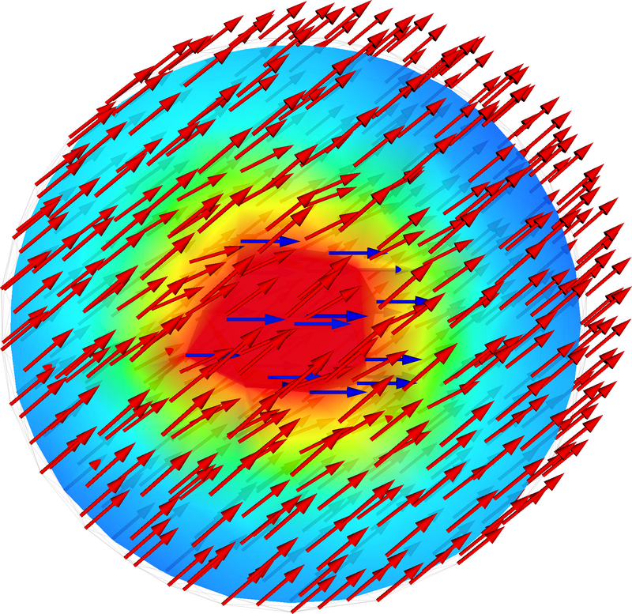
In this example we would like to simulate the development of a Bloch type
domain wall on a thin cobalt bar of dimension 504 x 1 x 1 nm
(bar.nmesh.h5) due to uniaxial
anisotropy.
import nmag
from nmag import SI, every, at
from numpy import array
import math
# Create simulation object (no demag field!)
sim = nmag.Simulation(do_demag=False)
# Define magnetic material (data from OOMMF materials file)
Co = nmag.MagMaterial(name="Co",
Ms=SI(1400e3, "A/m"),
exchange_coupling=SI(30e-12, "J/m"),
anisotropy=nmag.uniaxial_anisotropy(axis=[0, 0, 1], K1=SI(520e3, "J/m^3")))
# Load the mesh
sim.load_mesh("bar.nmesh.h5", [("bar", Co)], unit_length=SI(1e-9,"m") )
# Our bar is subdivided into 3 regions:
# - region A: for x < offset;
# - region B: for x between offset and offset+length
# - region C: for x > offset+length;
# The magnetisation is defined over all the three regions,
# but is pinned in region A and C.
offset = 2e-9 # m (meters)
length = 500e-9 # m
# Set initial magnetisation
def sample_m0((x, y, z)):
# relative_position goes linearly from -1 to +1 in region B
relative_position = -2*(x - offset)/length + 1
mz = min(1.0, max(-1.0, relative_position))
return [0, math.sqrt(1 - mz*mz), mz]
sim.set_m(sample_m0)
# Pin magnetisation outside region B
def sample_pinning((x, y, z)):
return x >= offset and x <= offset + length
sim.set_pinning(sample_pinning)
# Save the magnetisation along the x-axis
def save_magnetisation_along_x(sim):
f = open('bar_mag_x.dat', 'w')
for i in range(0, 504):
x = array([i+0.5, 0.5, 0.5]) * 1e-9
M = sim.probe_subfield_siv('M_Co', x)
print >>f, x[0], M[0], M[1], M[2]
# Relax the system
sim.relax(save=[(save_magnetisation_along_x, at('convergence'))])
We shall now discuss the bar.py script
step-by-step:
In this particular example we are solely interested in energy terms resulting
from exchange interaction and anisotropy. Hence we disable the demagnetisation
field as follows:
sim = nmag.Simulation(do_demag=False)
We then create the material Co used for the bar, cobalt in this case, which exhibits uniaxial
anisotropy in z direction with phenomenological anisotropy constant
K1 = SI(520e3, "J/m^3"):
Co = nmag.MagMaterial(name="Co",
Ms=SI(1400e3, "A/m"),
exchange_coupling=SI(30e-12, "J/m"),
anisotropy=nmag.uniaxial_anisotropy(axis=[0, 0, 1], K1=SI(520e3, "J/m^3")))
After loading the mesh, we set the initial magnetisation direction such that
it rotates from +z to -z while staying in the plane normal to x direction
(hence suggesting the development of a Bloch type domain wall):
def sample_m0((x, y, z)):
# relative_position goes linearly from -1 to +1 in region B
relative_position = -2*(x - offset)/length + 1
mz = min(1.0, max(-1.0, relative_position))
return [0, math.sqrt(1 - mz*mz), mz]
We further pin the magnetisation at the very left (x < offset = 2 nm)
and right (x > offset + length = 502 nm) of the bar
(note that the pinning function may also just return a python truth
value rather than the number 0.0 or 1.0):
def sample_pinning((x, y, z)):
return x >= offset and x <= offset + length
sim.set_pinning(sample_pinning)
Finally, we relax the system to find the equilibrium magnetisation
configuration, which is saved to the file bar_mag_x.dat in a format
understandable by Gnuplot.
We can then use the following Gnuplot script to visualize
the equilibrium magnetisation:
set term png giant size 800, 600
set out 'bar_mag_x.png'
set xlabel 'x (nm)'
set ylabel 'M.z (millions of A/m)'
plot [0:504] [-1.5:1.5] \
1.4 t "" w l 0, -1.4 t "" w l 0, \
'bar_mag_x.dat' u ($1/1e-9):($4/1e6) t 'nmag' w l 2
The resulting plot clearly shows that a Bloch type domain wall has developed:
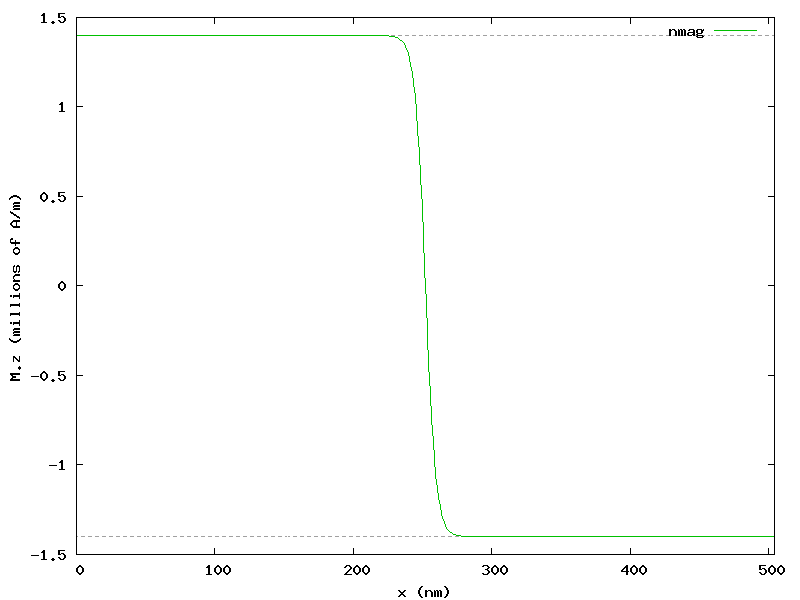
The figure shows also that the Bloch domain wall is well localized at the center
of the bar, in the region where x goes from 200 to 300 nm.
After simulating the same scenario with
OOMMF (see oommf/bar.mif),
we can compare results using another Gnuplot script:
#set term postscript enhanced eps color
set term png giant size 800, 600
set out 'bar_mag_x_compared.png'
set xlabel 'x (nm)'
set ylabel 'M.z (millions of A/m)'
Mz(x) = 1400e3 * cos(pi/2 + atan(sinh((x - 252e-9)/sqrt(30e-12/520e3))))
plot [220:280] [-1.5:1.5] \
1.4 t "" w l 0, -1.4 t "" w l 0, \
'bar_mag_x.dat' u ($1/1e-9):($4/1e6) t 'nmag' w lp 2, \
'oommf/bar_mag_x.txt'u ($1/1e-9):($4/1e6) t 'oommf' w lp 1, \
Mz(x*1e-9)/1e6 ti 'analytical' w l 3
which generates the following plot showing good agreement of both systems:
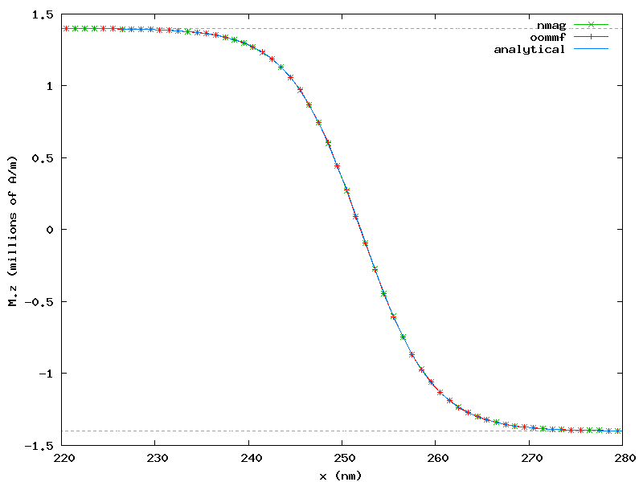
The plot shows also the known analytical solution:
Mz(x) = Ms * cos(pi/2 + atan(sinh((x - x_wall)/sqrt(A/K1))))
The plot shows only a restricted region located at the center of the bar,
thus allowing an easier comparison between the three sets of data.
In this example we will study the behaviour of a 10 x 10 x 10 nm iron
cube with cubic anisotropy in an external field.
import nmag
from nmag import SI, si
# Create the simulation object
sim = nmag.Simulation()
# Define the magnetic material (data from OOMMF materials file)
Fe = nmag.MagMaterial(name="Fe",
Ms=SI(1700e3, "A/m"),
exchange_coupling=SI(21e-12, "J/m"),
anisotropy=nmag.cubic_anisotropy(axis1=[1, 0, 0],
axis2=[0, 1, 0],
K1=SI(48e3, "J/m^3")))
# Load the mesh
sim.load_mesh("cube.nmesh", [("cube", Fe)], unit_length=SI(1e-9, "m"))
# Set the initial magnetisation
sim.set_m([0, 0, 1])
# Launch the hysteresis loop
Hs = nmag.vector_set(direction=[1.0, 0, 0.0001],
norm_list=[0, 1, [], 19, 19.1, [], 21, 22, [], 50],
units=0.001*si.Tesla/si.mu0)
sim.hysteresis(Hs)
We will now discuss the cube.py script step-by-step:
After creating the simulation object we define a magnetic material Fe
with cubic anisotropy representing iron:
Fe = nmag.MagMaterial(name="Fe",
Ms=SI(1700e3, "A/m"),
exchange_coupling=SI(21e-12, "J/m"),
anisotropy=nmag.cubic_anisotropy(axis1=[1,0,0],
axis2=[0,1,0],
K1=SI(48e3, "J/m^3")))
We load the mesh and set initial magnetisation pointing in +z direction
(that is, in a local minimum of anisotropy energy density).
Finally, we use hysteresis to apply gradually stronger fields in +x direction (up to 50 mT):
Hs = nmag.vector_set(direction=[1.0, 0, 0.0001],
norm_list=[0, 1, [], 19, 19.1, [], 21, 22, [], 50],
units=0.001*si.Tesla/si.mu0)
Note that we sample more often the region between 19 and 21 mT where
magnetisation direction changes rapidly due to having crossed the anisotropy
energy "barrier" between +z and +x (as can be seen in the graph below).
First, we extract the magnitude of the applied field and the x component of
magnetisation:
ncol cube H_ext_0 M_Fe_0 > cube_hext_vs_m.txt
Then we compare the result with OOMMF's result (generated from the
equivalent scene description oommf/cube.mif)
using the following Gnuplot script:
set term png giant size 800,600
set out 'cube_hext_vs_m.png'
set xlabel 'H_ext.x (A/m)'
set ylabel 'M.x (A/m)'
plot 'cube_hext_vs_m.txt' t 'nmag' w l 2,\
'oommf/cube_hext_vs_m.txt' u ($1*795.77471545947674):2 ti 'oommf' w p 1
which gives the following result:
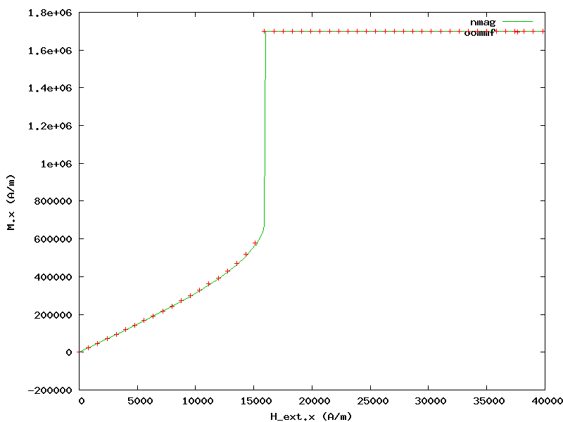
Nmag provides advanced capabilities to conveniently handle
arbitrary-order anisotropy energy functions. Details can be found in
the documentation of the MagMaterial class.
In this example we discuss
the script coin.py
which shows how the user can include in his simulations
a customised magnetic anisotropy.
import nmag
from nmag import SI, every, at
from nsim.si_units import si
import math
# Create simulation object (no demag field!)
sim = nmag.Simulation(do_demag=False)
# Function to compute the scalar product of the vectors a and b
def scalar_product(a, b): return a[0]*b[0] + a[1]*b[1] + a[2]*b[2]
# Here we define a function which returns the energy for a uniaxial
# anisotropy of order 4.
K1 = SI(43e3, "J/m^3")
K2 = SI(21e3, "J/m^3")
axis = [0, 0, 1] # The (normalised) axis
def my_anisotropy(m):
a = scalar_product(axis, m)
return -K1*a**2 - K2*a**4
my_material = nmag.MagMaterial(name="MyMat",
Ms=SI(1e6, "A/m"),
exchange_coupling=SI(10e-12, "J/m"),
anisotropy=my_anisotropy,
anisotropy_order=4)
# Load the mesh
sim.load_mesh("coin.nmesh.h5", [("coin", my_material)], unit_length=SI(1e-9, "m"))
# Set the magnetization
sim.set_m([-1, 0, 0])
# Compute the hysteresis loop
Hs = nmag.vector_set(direction=[1.0, 0, 0.0001],
norm_list=[-0.4, -0.35, [], 0, 0.005, [], 0.15, 0.2, [], 0.4],
units=si.Tesla/si.mu0)
sim.hysteresis(Hs, save=[('fields', 'averages', at('convergence'))])
We simulate the hysteresis loop for a ferromagnetic thin disc,
where the field is applied orthogonal to the axis of disc.
This script includes one main element of novelty, which concerns the way
the magnetic anisotropy is specified.
In previous examples we found lines such as:
my_material = nmag.MagMaterial(name="MyMat",
Ms=SI(1e6, "A/m"),
exchange_coupling=SI(10e-12, "J/m"),
anisotropy=nmag.uniaxial_anisotropy(axis=[0, 0, 1],
K1=SI(43e3, "J/m^3"),
K2=SI(21e3, "J/m^3")))
where the material anisotropy was specified using the provided functions
nmag.uniaxial_anisotropy (uniaxial_anisotropy) and nmag.cubic_anisotropy (cubic_anisotropy).
In this example we are using a different approach to define the anisotropy.
First we define the function my_anisotropy, which returns the energy density
for the magnetic anisotropy:
# Here we define a function which returns the energy for a uniaxial
# anisotropy of order 4.
K1 = SI(43e3, "J/m^3")
K2 = SI(21e3, "J/m^3")
axis = [0, 0, 1] # The (normalised) axis
def my_anisotropy(m):
a = scalar_product(axis, m)
return -K1*a**2 - K2*a**4
Note that the function returns a SI object with units "J/m^3" (energy density).
The reader may have recognised the familiar expression for the uniaxial anisotropy:
in fact the two code snippets we just presented are defining exactly the same
anisotropy, they are just doing it in different ways.
The function scalar_product, which we have used in the second code snippet
just returns the scalar product of two three dimensional vectors a and b
and is defined in the line above:
def scalar_product(a, b): return a[0]*b[0] + a[1]*b[1] + a[2]*b[2]
The function my_anisotropy has to be specified in the material definition:
instead of passing anisotropy=nmag.uniaxial_anisotropy(...)
we just pass anisotropy=my_anisotropy to the material constructor:
my_material = nmag.MagMaterial(name="MyMat",
Ms=SI(1e6, "A/m"),
exchange_coupling=SI(10e-12, "J/m"),
anisotropy=my_anisotropy,
anisotropy_order=4)
An important point to notice is that here we also provide an anisotropy order.
To understand what this number is, we have to explain briefly what is going on
behind the scenes. nsim calculates the values of the user provided function
for an appropriately chosen set of normalised vectors,
it then finds the polynomial in mx, my and mz
(the components of the normalised magnetisation) of the specified order,
which matches the sampled values.
The strength of this approach stands in the fact that the user has to provide
just the energy density for the custom anisotropy.
nsim is taking care of working out the other quantities which
are needed for the simulation, such as the magnetic field resulting
from the provided anisotropy energy, which would require a differentiation
of the energy with respect to the normalised magnetisation.
However the user must be sure that the provided function can be expressed
by a polynomial of the specified order in mx, my and mz.
In the present case we are specifying anisotropy_order=4 because the energy
for the uniaxial anisotropy can be expressed as a 4th-order polynomial
in mx, my and mz.
In some cases the user may find useful to know that the functions
nmag.uniaxial_anisotropy and nmag.cubic_anisotropy
can be added: the resulting anisotropy will have as energy
the sum of the energies of the original anisotropies.
The steps involved to extract and plot the data for the simulation discussed
in the previous section should be familiar to the user at this point of the manual.
We then just show the graph obtained from the results
of the script coin.py.
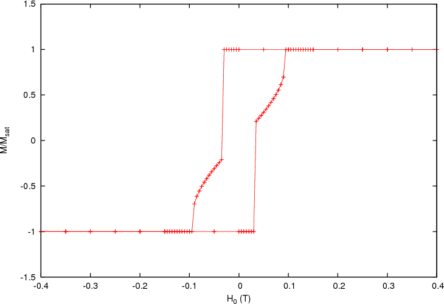
During the switching the system falls into an intermediate state,
where the magnetisation is nearly aligned with the anisotropy easy axis.
Micromagnetic simulations can last for many hours or even many days.
It is then important to be able to save periodically the state
of the simulation, in such a way that, if a hardware failure
or a power cut occurs, the simulation can be restarted
exactly at the point where its state was last saved.
In this example we show how an nmag script can be modified
to be "restartable". The only thing the user needs to do
is to periodically save the state of the simulation in what we call
a "restart file". The simulation can then be restarted
using the appropriate command line option.
The restart feature applies only to the hysteresis method.
We re-consider the cubic anisotropy example
(Cubic anisotropy simulation script)
and replace the last line:
sim.hysteresis(Hs)
with the following lines:
from nmag import every, at
sim.hysteresis(Hs, save=[('averages', 'fields', at('stage_end')),
('restart', at('stage_end') | every(1000, 'step'))])
The first two lines reproduce the default behaviour:
the fields and their averages are saved at the end of each stage.
The third line specifies that the restart file should be saved
at the end of each stage and also every 1000 steps.
For convenience the modified script cube_restartable.py is shown below:
import nmag
from nmag import SI, si
# Create the simulation object
sim = nmag.Simulation()
# Define the magnetic material (data from OOMMF materials file)
Fe = nmag.MagMaterial(name="Fe",
Ms=SI(1700e3, "A/m"),
exchange_coupling=SI(21e-12, "J/m"),
anisotropy=nmag.cubic_anisotropy(axis1=[1, 0, 0],
axis2=[0, 1, 0],
K1=SI(48e3, "J/m^3")))
# Load the mesh
sim.load_mesh("cube.nmesh", [("cube", Fe)], unit_length=SI(1e-9, "m"))
# Set the initial magnetisation
sim.set_m([0, 0, 1])
# Launch the hysteresis loop
Hs = nmag.vector_set(direction=[1.0, 0, 0.0001],
norm_list=[0, 1, [], 19, 19.1, [], 21, 22, [], 50],
units=0.001*si.Tesla/si.mu0)
from nmag import every, at
sim.hysteresis(Hs, save=[('averages', 'fields', at('stage_end')),
('restart', at('stage_end') | every(1000, 'step'))])
We will now demonstrate how the discussed nmag script can be
restarted. To do that, we will have to interrupt it artificially. We
start the simulation in the usual way:
$ nsim cube_restartable.py
We interrupt the execution after the hysteresis loop has started and
several stages have been computed. Do this by pressing simultaneously
the keys CTRL and C (in the same terminal window where nsim was
started), thus simulating what could have been the result of a power
cut. We then use the command:
$ ncol cube_restartable stage step time
to see at what point of the hysteresis loop the simulation was interrupted.
We obtain (for this particular interruption):
1 330 3.320127110062e-11
2 480 5.042492488627e-10
3 640 9.926580643272e-10
4 805 1.464971830453e-09
5 980 1.927649646634e-09
6 1150 2.406521613682e-09
7 1340 2.882400372552e-09
8 1515 3.371522550051e-09
9 1705 3.863380029345e-09
10 1920 4.365560120394e-09
11 2095 4.893234441813e-09
12 2295 5.436617525896e-09
13 2480 5.997866344586e-09
14 2680 6.570733097131e-09
15 2890 7.172534305054e-09
16 3100 7.803577637245e-09
17 3315 8.462827284047e-09
The simulation was interrupted at the seventeenth stage.
We now try to run the simulation again with the command:
$ nsim cube_restartable.py
obtaining the following output:
<snip>
NmagUserError: Error: Found old file ./cube_restartable_dat.ndt -- cannot proceed.
To start a simulation script with old data files present you either need
to use '--clean' (and then the old files will be deleted), or use '--restart'
in which case the run will be continued.
nsim suggests the possible alternatives. We can start the simulation from scratch with the command (but this will override any data from the previous run):
$ nsim cube_restartable.py --clean
or we can continue from the configuration which was last saved:
$ nsim cube_restartable.py --restart
Here we choose the second possibility.
After the simulation has finished we issue again
the command ncol cube_restartable stage step time, obtaining
the following output:
1 330 3.320127110062e-11
2 480 5.042492488627e-10
3 640 9.926580643272e-10
4 805 1.464971830453e-09
5 980 1.927649646634e-09
6 1150 2.406521613682e-09
7 1340 2.882400372552e-09
8 1515 3.371522550051e-09
9 1705 3.863380029345e-09
10 1920 4.365560120394e-09
11 2095 4.893234441813e-09
12 2295 5.436617525896e-09
13 2480 5.997866344586e-09
14 2680 6.570733097131e-09
15 2890 7.172534305054e-09
16 3100 7.803577637245e-09
17 3315 8.462827284047e-09
stage step #time
<> <> #<s>
18 3715 8.519843629989e-09
19 3975 9.300878866142e-09
...
The two lines between stage 17 and 18 stand as a reminder that the
simulation was restarted at that point. (They need to be removed
manually from the cube_restartable_dat.ndt file, before ncol can
work in the usual way on the ndt file.)
In this example, we study the dynamics of a simple system consisting
of two 15 nm x 15 nm x 15 nm cubes close to one another (with 2 nm
spacing along the x-axis). We take the right cube to be made of
PermAlloy and the left cube to be made of Cobalt, with the magnetic
anisotropy axis pointing in z-direction. The mesh has been generated
with Netgen from the geometry file two_cubes.geo.
We use the two_cubes.py script to carry out the simulation:
import nmag
from nmag import SI, every, at
sim = nmag.Simulation()
# define magnetic material Cobalt (data from OOMMF materials file)
Co = nmag.MagMaterial(name="Co",
Ms=SI(1400e3, "A/m"),
exchange_coupling=SI(30e-12, "J/m"),
anisotropy=nmag.uniaxial_anisotropy(axis=[0,0,1], K1=SI(520e3, "J/m^3")))
# define magnetic material Permalley
Py = nmag.MagMaterial(name="Py",
Ms=SI(860e3,"A/m"),
exchange_coupling=SI(13.0e-12, "J/m"))
# load mesh
sim.load_mesh("two_cubes.nmesh.h5",
[("cube1", Py),("cube2", Co)],
unit_length=SI(1e-9,"m")
)
# set initial magnetisation along the
# positive x axis for both cubes, slightly off in z-direction
sim.set_m([0.999847695156, 0, 0.01745240643731])
ns = SI(1e-9, "s") # corresponds to one nanosecond
sim.relax(save = [('averages', every('time', 0.01*ns)),
('fields', every('time', 0.05*ns) | at('convergence'))])
The script is very similar to the one used in example 2. However,
here we have two materials. The related changes are that we define two
magnetic materials, and assign them to objects Co and Py.
When loading the mesh:
sim.load_mesh("two_cubes.nmesh.h5",
[("cube1", Py),("cube2", Co)],
unit_length=SI(1e-9,"m")
)
we need to assign regions 1 and 2 in the mesh file (which correspond
to the two cubes) to the materials. This is done with this list of tuples:
[("cube1", Py),("cube2", Co)]
The first list entry is ("cube1", Py) and tells nmag that we would
like to refer to the region 1 as cube1, and that we would like to
assign the material Py to this region. This entry refers to region
1 because it is the first entry in the list.
The second list entry is ("cube2", Co) and tells nmag that we
would like to refer to the region 2 as cube2, and that we would
like to assign the material Co to this region.
If there was a region 3 in the mesh file, we would add a third list
entry, for example ("cylinder",Co) for a Co cylinder.
Note that at this stage of nmag, the region name (such as cube1,
cube2, etc) are not used in the simulation, apart from diagnostic
purposes in progress messages.
Physically, what happens in this system is that the magnetisation of
the Cobalt cube aligns rather fast with the anisotropy direction and
then slowly forces the magnetisation of the PermAlloy cube into the
opposite direction (through the action of the stray field) to minimise
total energy of the configuration.
The Initial magnetisation is taken to point in x-direction. As this is an
unstable equilibrium direction for the magnetisation anisotropy of the
Cobalt cube, we slightly distort the initial magnetisation by adding a
tiny component in +z-direction.
It is instructive to compare the fields and subfields for this
particular example with the list of fields and subfields for a
single-material simulation. In effect, all the fields that are related
to the properties of some particular magnetic component carry multiple
subfields. In particular, there is only one H_ext field, as the
externally applied field is experienced in the same way by all
materials, but the M*H energy density associated with H_ext
has a dependency on the magnetic component (through M), so we have
two subfields E_ext_Py and E_ext_Co in the field E_ext.
The situation is virtually identical with H_demag/E_demag and
the related charge density rho and magnetic scalar potential
phi. All the other relevant fields in this example turn out to be
related to a particular magnetic component.
| Field |
Subfield(s) |
Comment |
|---|
| m |
m_Py, m_Co |
normalised magnetisation |
| M |
M_Py, M_Co |
magnetisation |
| H_total |
H_total_Py, H_total_Co |
total effective field |
| H_ext |
H_ext |
external (applied) field (only one) |
| E_ext |
E_ext_Py, E_ext_Co |
energy density of Py due to external field |
| H_anis |
H_anis_Py, H_anis_Co |
crystal anisotropy field |
| E_anis |
E_anis_Py, E_anis_Co |
crystal anisotropy energy density |
| H_exch |
H_exch_Py, H_exch_Co |
exchange field |
| E_exch |
E_exch_Py, E_exch_Co |
exchange energy |
| H_demag |
H_demag |
demagnetisation field (only one) |
| E_demag |
E_demag_Py, E_demag_Co |
demagnetisation field energy density |
| phi |
phi |
scalar potential for H_demag |
| rho |
rho |
magnetic charge density (div M) |
| H_total |
H_total_Py, H_total_Co |
total effective field |
The issue of multiple magnetic components becomes much more
interesting when we study multi-component alloys, i.e. if we associate
more than one type of magnetisation to a single region in the
mesh. Usually, we will then also have to introduce some "generalized
anisotropy energy" term of the form E=c*M_a*M_b that depends on
more than a single magnetisation subfield (see More than one magnetic
material, exchange coupled).
Once we have run the simulation using:
nsim two_cubes.py
we can analyse the results. For example, we can plot the magnetisation
of the two materials against time:
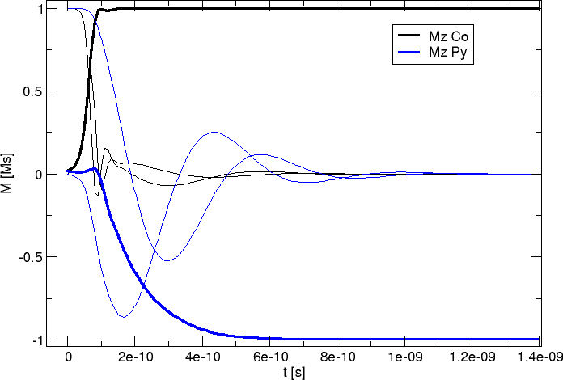
The blue lines represent the (soft) permalloy and the black lines show
the (hard) cobalt. Each thick line denotes the z-component of the corresponding material.
This plot has been created with the following command:
ncol two_cubes 0 m_Co_0 m_Co_1 m_Co_2 m_Py_0 m_Py_1 m_Py_2 | xmgrace -nxy -
We can further convert the field data into vtk files:
nmagpp --vtk=two_cubes.vtk two_cubes_dat.h5
and visualise their content. We start with the initial configuration
(Permalloy in blue on the left, Cobalt in black on the right, only 10
percent of the actual magnetisation vectors on the mesh nodes are
shown to improve the readability of the plots):
Time T=0 ps:
Time T=1e-10s=0.1ns: Cobalt is already pointing up, i.e. in the
direction of the anisotropy axis, while Permalloy has just started to
rotate.
Time T=0.3ns: Cobalt has reached its final configuration (pointing up)
and Permalloy is still rotating, but already pointing down (to
minimise the interaction energy between the cubes to the
demagnetisation stray fields).
Time T=1 ns: The final configuration has been reached.
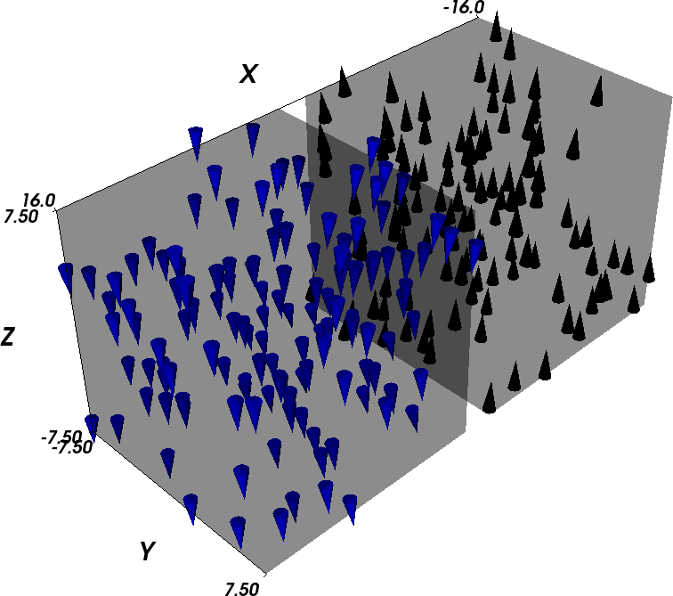
This example shows how to derive the period of the Larmor precession
for the magnetisation and compare the result from simulation to the
analytical solution. It is inspired by an example from the magpar
documentation
(http://magnet.atp.tuwien.ac.at/scholz/magpar/doc/html/examples.html#sphere_larmor).
We us the larmor.py script:
import nmag
from nmag import SI, every, at, si
#create simulation object and switch off
#the computation of the demagnetising field
sim = nmag.Simulation(do_demag = False)
# define magnetic material so that Js = mu0*Ms = 1 T
Py = nmag.MagMaterial(name="Py",
Ms=1.0*si.Tesla/si.mu0,
exchange_coupling=SI(13.0e-12, "J/m"),
llg_damping = SI(0.0)
)
# load mesh
sim.load_mesh("sphere1.nmesh.h5",
[("sphere", Py)],
unit_length=SI(1e-9,"m")
)
# set initial magnetisation
sim.set_m([1,1,1])
# set external field
Hs = nmag.vector_set(direction=[0.,0.,1.],
norm_list=[1.0],
units=1e6*SI('A/m')
)
ps = SI(1e-12, "s") # ps corresponds to one picosecond
# let the magnetisation precess around the direction of the applied field
sim.hysteresis(Hs,
save=[('averages', every('time', 0.1*ps))],
do=[('exit', at('time', 300*ps))])
We turn off computation of the demagnetising field:
sim = nmag.Simulation(do_demag = False)
and set the damping term in the LLG equation to zero:
llg_damping = SI(0.0)
We set saturation magnetisation to Js = 1 T (see Library of useful si
constants):
Ms=1.0*si.Tesla/si.mu0
We use a sphere as the magnetic object and, starting from a uniform
magnetic configuration along the [1,1,1] direction:
sim.set_m([1,1,1])
To compute the time development in the presence of a static field pointing in the z-direction, we ''abuse'' the hysteresis command (because this way we can conveniently save the data at equidistant time intervals). To do this, we need to find the sequence of applied fields (here it is only one, of course):
Hs = nmag.vector_set( direction=[0.,0.,1.],
norm_list=[1.0],
units=1e6*SI('A/m')
)
and then use the hysteresis command:
sim.hysteresis(Hs,
save=[('averages', every('time', 0.1*ps))],
do=[('exit', at('time', 300*ps))])
The hysteresis command will save the averages (which is what we need
to for the fit below) every 0.1 pico seconds. Once we reach the time
of 300 pico seconds, the method will exit.
The dynamics of the magnetisation is driven only by the
Zeeman effect, with a torque:
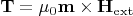
acting on the magnetisation m which is orthogonal to both m and H;
thus causing the magnetisation to precess around the applied field
direction. The frequency of the precession, called f_Larmor, is given
by:
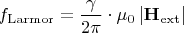
where the parameter gamma, called gyromagnetic ratio, is taken to
have the following value (see ):
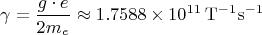
so that f_Larmor = 35.176 GHz and the period T = 1/f_Larmor =
0.0284284 ns.
We save the average magnetisation every 0.1 ps in order to have a
sufficient number of points to compute the period T.
We execute the script as usual:
$ nsim larmor.py
and extract the (spatially averaged) magnetisation data for all save time steps:
$ ncol larmor time m_Py_0 m_Py_1 m_Py_2 > data.txt
Using Gnuplot, we extract the value of the Larmor period T from the x-component of the magnetisation:
$ gnuplot
and the following command plots the x component of the magnetisation
as a function of the simulation time, together with a fit for a
function f(x) (where x represents time):
gnuplot> f(x) = A*sin(2*pi*x/B + C) + D
gnuplot> B = 30
gnuplot> fit f(x) "data.txt" u ($1/1e-12):2 via A,B,C,D
gnuplot> plot "data.txt" u ($1/1e-12):2, f(x)
The result is the following image:
The values for B in the fit, which corresponds to the unknown period
T, is initially set to 30 in order to help Gnuplot fit the curve.
Such fit on T gives the value 28.4293; this value
corresponds to 0.0284293 ns when rescaled by the 10e12 factor used for
the plotting, and shows a difference starting from the 5th digit when
compared to the analytical solution of 0.0284284 ns.
Concerning the simulation of periodic magnetic structures, there are a
few somewhat subtle issues to be taken into account, both with respect
to the demagnetising and the exchange field.
The issue with the exchange field is that we may encounter situations
where the magnetic material crosses the boundary of an elementary
cell: a periodic array of non-touching spheres in a cubic lattice is
fundamentally different from its complement, a cubic lattice made of
spherical holes, insofar as that in the latter case, it is impossible
to do a simulation using periodic boundary conditions without
identifying degrees of freedom that live on boundaries of the
simulation cell. Nmag can deal with this automatically, provided the
mesh file contains periodicity information, i.e. data on how to
identify nodes on exterior faces.
As for the demagnetising field, the most important problem is that one
cannot ignore the effect of the faraway boundaries of the system: a
100 nm x 100 nm x 100 nm cell made of magnetic material in the center
of a large (three-dimensional) periodic array will experience very different demagnetising
fields depending on the shape of the outer boundaries of this array.
Assuming spatially constant magnetisation, if these cells form a
"macroscopic" (tree-dimensional) sphere, H_demag will be -1/3 M, while for a flat box,
H_demag may be very close to -M. Nmag takes these "macro-geometry"
effects into account by allowing the user to provide a geometrical
layout for a finite number (say, 100-1000) of cells that approximates
the shape of the faraway outer boundary of the system.
The macro geometry approach is described in which may serve as a
more detailed instruction to the concept.
In this example, we simulate a single cell in the middle of a long
one-dimensional periodic array where for the purpose of computing the
demagnetising field, we take three extra copies of this cell to the
left and three copies to the right along the x axis. (For real
applications, one would use more copies. The only effect of additional
copies are to increase the setup time needed to compute an internal
boundary/boundary interaction matrix.)
The next example 2D periodicity demonstrates the macro geometry
concept for a thin film. This is followed by the Spin-waves example
which includes exchange coupling between periodic copies (and is of
more practical value).
The mesh of the central simulation cell used is described in cube.geo which reads:
algebraic3d
# prism
solid prism = orthobrick (-7.50, -7.50, -7.50; 7.50, 7.50, 7.50) -maxh = 1.8000;
tlo prism;
Note that the mesh is centered around the origin. This is recommended for periodic simulations. (We need to document this better.) The resulting mesh is this (the periodic copies are not shown):
The script periodic1.py reads:
import nmag
from nmag import SI
# define magnetic material
Py = nmag.MagMaterial(name="Py",
Ms=SI(1e6,"A/m"),
exchange_coupling=SI(13.0e-12, "J/m")
)
# size of simulation cell, plus extra spacing
# to avoid exchange interaction across interfaces
# between repeated copies of the simulation cell.
x_lattice = 15.01 # the spacing is 0.01
y_lattice = 0.0
z_lattice = 0.0
# list to store the lattice points where the periodic
# copies will be placed
lattice_points = []
for xi in range(-3,4):
lattice_points.append([xi*x_lattice,0.0*y_lattice,0.0*z_lattice])
# create data structure pbc for this macro geometry
pbc = nmag.SetLatticePoints(vectorlist=lattice_points, scalefactor=SI(1e-9,'m'))
#create simulation object, passing macro geometry data structure
sim = nmag.Simulation(periodic_bc=pbc.structure)
# load mesh
sim.load_mesh("cube1.nmesh.h5", [("repeated-cube-1D", Py)], unit_length=SI(1e-9,"m") )
# set initial magnetisation along the periodic axis
sim.set_m([1.0,0,0])
# compute the demagnetising field
sim.advance_time(SI(0,"s"))
# probe demag field at the centre of the cube, function
# returns an SI-Value ('siv')
H_demag = sim.probe_subfield_siv('H_demag', [0,0,0])
print "H_demag_x at centre of cube = ", H_demag[0]
print "H_demag_y at centre of cube = ", H_demag[1]
print "H_demag_z at centre of cube = ", H_demag[2]
Setup can be splitted into three steps. In the first step we set the
x_lattice parameter to be slightly larger than the dimension of the
unit cell (in order not to have any overlap between the cells) and set
the y_lattice and z_lattice parameters to zero to indicate no
periodidicity along these directions
x_lattice = 15.01 # the spacing is 0.01
y_lattice = 0.0
z_lattice = 0.0
In the second step we define the lattice points where we want
the periodic copies to be:
for xi in range(-3,4):
lattice_points.append([xi*x_lattice,0.0*y_lattice,0.0*z_lattice])
and in the third step we define the object whose structure attribute
will be used as the parameter in the definition of the simulation
object
pbc = nmag.SetLatticePoints(vectorlist=lattice_points, scalefactor=SI(1e-9,'m'))
#create simulation object
sim = nmag.Simulation(periodic_bc=pbc.structure)
The remaining part of the script computes the demagnetisation field at
the center of the cube. This calculation can be carried out for a
varying number of copies of the simulation cell. The next figures show
components of demagnetising field in the center of the cube as a
function of the number of periodic copies. As in the code above, we
impose an uniform magnetisation along the periodic x-axis. The first
figure shows the demagnetisation field along the x-axis, and the
second figure along the y-axis. In both figures, we have added green
crosses that have been obtained by computing the demagfield using
OOMMF (where in OOMMF we have actually made the simulation cell larger
and larger to represent the growing number of periodic copies).
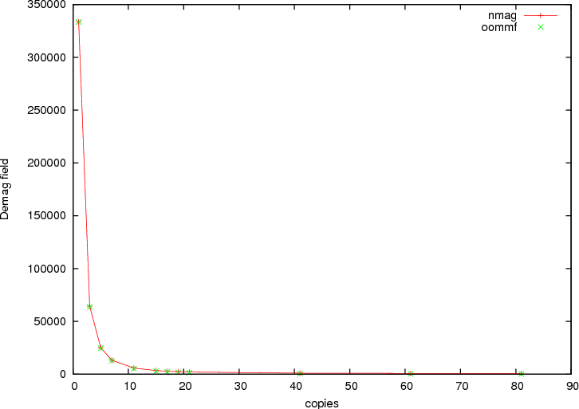
Demagnetising field as a function of the number of periodic
copies with the magnetisation aligned along the periodic axis.
Demagnetising field as a function of the number of periodic
copies with the magnetisation aligned along an axis orthogonal
to the periodic one.
This example is another application of the macro-geometry feature,
where we now deal with a 2D "thin film" system. The unit cell is a
30x10x10 nm^3 prism
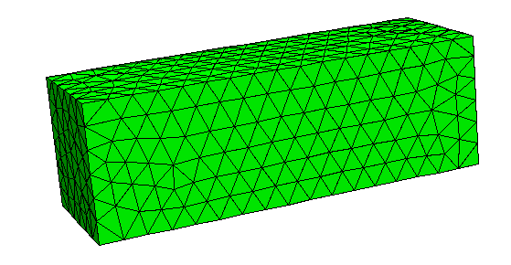
where we take 10 copies in x- and 40 copies in y-direction to create
the macro geometry.
The script no_periodic.py simulates behaviour of
just the unit cell of size 30x10x10 nm^3 (without any periodic
copies):
import nmag
from nmag import SI, every, at
# define magnetic material
Py = nmag.MagMaterial(name="Py",
Ms=SI(1e6,"A/m"),
exchange_coupling=SI(13.0e-12, "J/m")
)
#create simulation object
sim = nmag.Simulation()
# load mesh
sim.load_mesh("prism.nmesh.h5", [("no-periodic", Py)], unit_length=SI(1e-9,"m") )
# set initial magnetisation
sim.set_m([1.,1.,1.])
# loop over the applied field
s = SI(1,"s")
sim.relax(save=[('averages','fields', every('time',5e-12*s) | at('convergence'))])
and the relaxation curves are obtained via:
set term postscript enhanced color
set out 'no_periodic.ps'
set xlabel 'time (s)'
set ylabel 'M / Ms'
plot 'plot_no_periodic.dat' u 1:2 ti 'Mx' w lp, \
'plot_no_periodic.dat' u 1:3 ti 'My' w lp, \
'plot_no_periodic.dat' u 1:4 ti $
which creates the following plot:
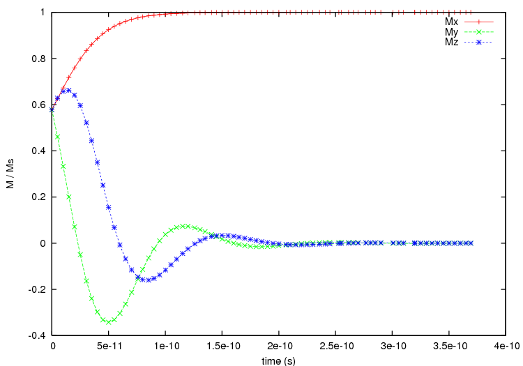
From this plot we can see that with using only the unit cell the
magnetisation aligns along the x-axis at equilibrium.
We now move to the macro geometry of a thin film with dimensions 400x300x10nm^3 which is realised in periodic2.py.
import nmag
from nmag import SI, every, at
# define magnetic material
Py = nmag.MagMaterial(name="Py",
Ms=SI(1e6,"A/m"),
exchange_coupling=SI(13.0e-12, "J/m")
)
# size of the simulation cell, plus extra spacing
x_lattice = 30.01 # the spacing is 0.01 to avoid exchange coupling
y_lattice = 10.01 # between repeated copies of the simualtion cell
z_lattice = 0.0
# list to store the lattice points where the periodic
# copies of the simulation cell will be placed
lattice_points = []
for xi in range(-4,6):
for yi in range(-19,21):
lattice_points.append([xi*x_lattice,yi*y_lattice,0.0*z_lattice])
# create data structure pbc for this macro geometry
pbc = nmag.SetLatticePoints(vectorlist=lattice_points, scalefactor=SI(1e-9,'m'))
#create simulation object, passing macro geometry data structure
sim = nmag.Simulation(periodic_bc=pbc.structure)
# load mesh
sim.load_mesh("prism.nmesh.h5", [("repeated-prism-2D", Py)], unit_length=SI(1e-9,"m") )
# set initial magnetisation
sim.set_m([1.,1.,1.])
# loop over the applied field
s = SI(1,"s")
sim.relax(save=[('averages', 'fields', every('time',5e-12*s) | at('convergence'))])
As in the previous example, we first define the three unit vectors of
the lattice, again slightly larger than the dimension of the unit cell
to avoid overlapping (and thus to eleminate any exchange coupling
across the interfaces for this demonstration of the demagnetisation effects):
x_lattice = 30.01 # the spacing is 0.01
y_lattice = 10.01 # the spacing is 0.01
z_lattice = 0.0
Then we define where the copies will be placed:
for xi in range(-4,6):
for yi in range(-19,21):
lattice_points.append([xi*x_lattice,yi*y_lattice,0.0*z_lattice])
# copies of the system along the x-axis
pbc = nmag.SetLatticePoints(vectorlist=lattice_points, scalefactor=SI(1e-9,'m'))
The simulation cell is (always) the one at the (0,0,0) lattice
point. The for loops therefore place 4 copies of the simulation cell
in the negative x direction [i.e. (-4,0,0), (-3,0,0), (-2,0,0), and
(-1,0,0)] and 5 in the positive the x direction [i.e. (1,0,0),
(2,0,0), (3,0,0), (4,0,0), (5,0,0)]. The translation vector (0,0,0)
corresponds to the actual simulation cell.
Similarly, the inner for loop places 20 copies along the positive
y-axis and 19 along the negative one.
We set the same initial configuration as before, with a uniform
magnetisation along [1,1,1], and let the system evolve towards the
equilibrium.
The outcome is shown in the following figure:
where we notice that the final configuration is now with the
magnetisation aligned along the (negative) y axis, and not along the x
axis as before. The alignment along the y-direction is expected, as
now the macro geometry has a total size of 300.09 nm times 400.39 nm
(30 nm x 10 copies plus spacings along the x direction times 10 nm x
40 copies plus spacings along the y direction) times 10nm (no periodic
copies along the z direction), so the longest side now is along the y
direction. The demagnetisation energy of the macro geometry drives the
alignment of the magnetisation with the y-direction.
Other usage examples include this study of an array of interacting triangular rings.
Starting from a magnetisation out of equilibrium, we study the time
development of the magnetisation, and track -visually- the spin waves.
The geometry is a thin film with dimensions 30 nm x 9 nm x 0.2 nm along
the x,y and z axes, respectively. The mesh is centered at (0,0,0)
and periodic along the x direction, so that the nodes with coordinates
(15.0,y,z) will be considered as equivalent to the nodes with coordinates (-15.0,y,z).
The mesh is contained in periodic.nmesh and
has been produced using Netgen (from periodic.geo) and the nmeshmirror command to create required periodic structure
$ nmeshmirror netgen.nmesh 1e-6 1e-6 -1,0,0 periodic.nmesh
To see how the system relaxes, we use the following
script (spinwaves.py):
import nmag
from nmag import SI
import math
# define magnetic material
Py = nmag.MagMaterial(name="Py",
Ms=SI(1e6,"A/m"),
exchange_coupling=SI(13.0e-12, "J/m"),
llg_damping = SI(0.02,"")
)
# lattice spacings along the main axes;
# the value must be zero for no periodic copies,
# equal to the mesh dimension along the
# given axis otherwise
x_lattice = 30.0
y_lattice = 0.0
z_lattice = 0.0
# list to store the lattice points where the periodic
# copies will be placed
lattice_points = []
for xi in range(-1,2):
lattice_points.append([xi*x_lattice,0.0*y_lattice,0.0*z_lattice])
# copies of the system along the x-axis
pbc = nmag.SetLatticePoints(vectorlist=lattice_points, scalefactor=SI(1e-9,'m'))
#create simulation object
sim = nmag.Simulation(periodic_bc=pbc.structure)
# load mesh
sim.load_mesh("periodic.nmesh", [("periodic-film", Py)], unit_length=SI(1e-9,"m") )
print ocaml.mesh_plotinfo_periodic_points_indices( sim.mesh.raw_mesh )
# function to set the magnetisation
def perturbed_magnetisation(pos):
x,y,z = pos
newx = x*1e9
newy = y*1e9
if 8<newx<14 and -3<newy<3:
# the magnetisation is twisted a bit
return [1.0, 5.*(math.cos(math.pi*((newx-11)/6.)))**3 *\
(math.cos(math.pi*(newy/6.)))**3, 0.0]
else:
return [1.0, 0.0, 0.0]
# set initial magnetisation
sim.set_m(perturbed_magnetisation)
# let the system relax generating spin waves
s = SI(1,"s")
from nsim.when import every, at
sim.relax(save=[('averages','fields', every('time',0.05e-12*s) | at('convergence'))])
To execute this script, we call the nsim executable, for example (on linux):
$ nsim spinwaves.py
As in the previous examples, we first need to import the modules
necessary for the simulation, define the material of the magnetic
object, load the mesh and set the initial configuration of the
magnetisation. Here, we start from a spatially non-homogeneous
configuration in order to excite spin waves. Nmag allows us to provide a
function to be sampled on the mesh that defines a particular
magnetisation configuration.
In our case, we use the function
def perturbed_magnetisation(pos):
x,y,z = pos
newx = x*1e9
newy = y*1e9
if 8<newx<14 and -3<newy<3:
# the magnetisation is twisted a bit
return [1.0, 5.*(math.cos(math.pi*((newx-11)/6.)))**3 *\
(math.cos(math.pi*(newy/6.)))**3, 0.0]
else:
return [1.0, 0.0, 0.0]
which is then passed on to set_m
# set initial magnetisation
sim.set_m(perturbed_magnetisation)
Once the calculation has finished, we can see how the system relaxed
by means of snapshots of the magnetisation evolution.
The nmagpp command allows us to create vtk files
from the data saved with the save option in the relax command
nmagpp --vtk=fields spinwaves
The first few frames that show the evolution of the magnetic
configuration are shown below.
Suppose we have saved spatially resolved fields (as, for example, in
example 2), and we would like to read those from the data file to
process the data further.
We can use the nmagpp tool if it provides the required functionality.
Alternatively, we can write a Python script that:
- reads the data from the _dat.h5 file
- carries out the required post processing and/or saves the data in
(another) format.
The program read_h5.py
demonstrates how to read the saved configuration with id=0 of the m_Py
subfield, and to print this to the screen.
import nmag
#read data, positions, and sites from h5 file
m=nmag.get_subfield_from_h5file('bar_dat.h5','m_Py',id=0)
pos=nmag.get_subfield_positions_from_h5file('bar_dat.h5','m_Py')
site=nmag.get_subfield_sites_from_h5file('bar_dat.h5','m_Py')
#can carry out some sanity checks (but is not necessary)
assert m.shape == pos.shape
assert len(m) == len(site)
#print the data
for i in range(len(m)):
print site[i], pos[i], m[i]
The functions get_subfield_from_h5file,
get_subfield_positions_from_h5file and
get_subfield_sites_from_h5file allow in principle to retrieve all the
field data from the h5 files and stores this in the variables m,
pos, and site, respectively.
The program, when run like this:
$ nsim read_h5.py
in the example 2 directory, produces output starting as follows (assuming the bar_dat.h5 file exists):
[0] [ 0. 0. 0.] [ 0.70710677 0. 0.70710677]
[1] [ 3.00000000e-09 0.00000000e+00 0.00000000e+00] [ 0.70710677 0. 0.70710677]
[2] [ 6.00000000e-09 0.00000000e+00 0.00000000e+00] [ 0.70710677 0. 0.70710677]
[3] [ 9.00000000e-09 0.00000000e+00 0.00000000e+00] [ 0.70710677 0. 0.70710677]
[4] [ 1.20000000e-08 0.00000000e+00 0.00000000e+00] [ 0.70710677 0. 0.70710677]
[5] [ 1.50000000e-08 0.00000000e+00 0.00000000e+00] [ 0.70710677 0. 0.70710677]
[6] [ 1.80000000e-08 0.00000000e+00 0.00000000e+00] [ 0.70710677 0. 0.70710677]
[7] [ 2.10000000e-08 0.00000000e+00 0.00000000e+00] [ 0.70710677 0. 0.70710677]
[8] [ 2.40000000e-08 0.00000000e+00 0.00000000e+00] [ 0.70710677 0. 0.70710677]
[9] [ 2.70000000e-08 0.00000000e+00 0.00000000e+00] [ 0.70710677 0. 0.70710677]
[10] [ 3.00000000e-08 0.00000000e+00 0.00000000e+00] [ 0.70710677 0. 0.70710677]
[11] [ 3.00000000e-08 3.00000000e-08 1.00000000e-07] [ 0.70710677 0. 0.70710677]
[12] [ 3.00000000e-08 2.70000000e-08 1.00000000e-07] [ 0.70710677 0. 0.70710677]
We can see that the site index is (here) just an integer, the position
(in nanometre) is shown as a triplet of three scalars, and the normalised
magnetisation is also a vector with three components.
The data (in the arrays m, site and position in this
example) can be manipulated as explained in the numpy documentation,
because it is of type numpy array. Numpy provides a powerful matrix
processing environment.
Nmag provides support for the Zhang-Li extension to the
Landau-Lifshitz-Gilbert (LLG) equation , in order to model the interaction
between a uniform electric current density and a spatially varying
magnetisation. The extened LLG equation reads
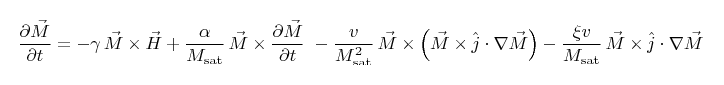
where the first two terms on the right-hand side are the normal LLG equation, and the extra terms come from the Zhang-Li model, and
The central column shows the method which can be used to set
the field (Simulation.set_m or Simulation.set_H_ext) or
the name of the corresponding parameter in the material definition
(for example, mat = MagMaterial(Ms=SI(0.8e6, "A/m"), ...)).
The current density appears only throughout the quantity v, which
we define as:
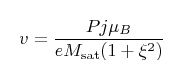
with:
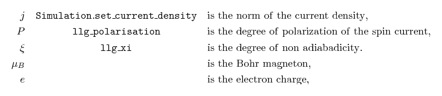
In this and in the next examples we show how to set up a micromagnetic
simulation including such spin transfer torque effects.
We show how the current density can be specified and how the required
parameters can be included in the material definitions.
As a first example, we consider a thin Permalloy film which develops
a vortex in the center. We compute the dynamics of the vortex
as a response to the application of a current.
The system under investigation is a 100 x 100 x 10 nm Permalloy film.
The mesh is stored in the file
pyfilm.nmesh.h5.
The simulation is subdivided in two parts:
- In part I, the system is
relaxed to obtain the initial magnetisation configuration when the
current is not applied, which is just a vortex in the center of
the film.
- In part II, the vortex magnetisation obtained in part I is
loaded and used as the initial magnetisation configuration. A current
is applied and the magnetisation dynamics is analysed by
saving periodically the data (the magnetisation, the other fields and
their averages).
Here we use two separate simulation scripts to carry out part I and
part II subsequentely. This is the approach that is easiest to
understand. Once the basic ideas have become clear, it is often a good
idea to write only one simulation script that carries out both part I
and part II. (Indeed many of the parameters, such as the saturation
magnetisation or the exchange coupling need to be specified in each of
the two scripts leading to possible errors: for example if one decides
to investigate a different material and changes the parameters just in
one file and forgets the other, etc.). In the next section
(Example: Current-driven magnetisation precession in nanopillars), we present
a more robust approach, where both part I and part II are executed by
just one script.
The first script carries out a normal micromagnetic simulation
(i.e. no spin transfer torque), and determines the relaxed
magnetisation configuration for a given geometry, material and initial
configuration. It saves the final magnetisation to disk. Here is the
full listing of relaxation.py
:
# We model a bar 100 nm x 100 nm x 10 nm where a vortex sits in the center.
# This is part I: we just do a relaxation to obtain the shape of the vortex.
import math, nmag
from nmag import SI, at
from nsim.si_units.si import degrees_per_ns
# Define the material
mat_Py = nmag.MagMaterial(name="Py",
Ms=SI(0.8e6,"A/m"),
exchange_coupling=SI(13.0e-12, "J/m"),
llg_gamma_G=SI(0.2211e6, "m/A s"),
llg_damping=1.0)
# Define the simulation object and load the mesh
sim = nmag.Simulation()
sim.load_mesh("pyfilm.nmesh.h5", [("Py", mat_Py)], unit_length=SI(1e-9,"m"))
# Set a initial magnetisation which will relax into a vortex
def initial_m(p):
x, y, z = p
return [-(y-50.0e-9), (x-50.0e-9), 40.0e-9]
sim.set_m(initial_m)
# Set convergence parameters and run the simulation
sim.set_params(stopping_dm_dt=1.0*degrees_per_ns)
sim.relax(save=[('fields', at('step', 0) | at('stage_end'))])
# Write the final magnetisation to file "vortex_m.h5"
sim.save_restart_file("vortex_m.h5")
After importing the usual Nmag module and helper objects, we define
the material, create the simulation object and load the mesh,
(similar to what is shown in previous examples):
# Define the material
mat_Py = nmag.MagMaterial(name="Py",
Ms=SI(0.8e6,"A/m"),
exchange_coupling=SI(13.0e-12, "J/m"),
llg_gamma_G=SI(0.2211e6, "m/A s"),
llg_damping=1.0)
# Define the simulation object and load the mesh
sim = nmag.Simulation()
sim.load_mesh("pyfilm.nmesh.h5", [("Py", mat_Py)], unit_length=SI(1e-9,"m"))
Notice that the damping parameter llg_damping is set to a high value,
to allow for quick relaxation of the magnetisation.
We write a function initial_m that is being given the position of each
site in the mesh as a vector p with three components, and which returns
an initial magnetisation vector. This vector is chosen such that the initial
magnetisation that is described by this function is likely to relax into a
vortex configuration:
def initial_m(p):
x, y, z = p
return [-(y-50.0e-9), (x-50.0e-9), 40.0e-9]
The magnetisation at point p is obtained from a 90 degree rotation
of the vector which connects p to the center of the film.
This vector doesn't have to be normalised: Nmag will take care of
normalising it for us.
We need to instruct the simulation object sim to use this function
to set the magnetisation:
sim.set_m(initial_m)
We set the criterion to be used to decide when the magnetisation has
relaxed. The value used here in set_params (i.e. one degree per
nanosecond) is the default value (so we could omit this, but we change
the value in the second part of this example):
sim.set_params(stopping_dm_dt=1.0*degrees_per_ns)
We finally run the simulation using the relax command until the
convergence criterion dm/dt < 1 degree per nanosecond is
fullfilled. In the process, we save spatially resolved data for all
fields at step 0, and the same data at the end of the stage
(i.e. when an equilibrium has been reached, just before the relax
function returns):
sim.relax(save=[('fields', at('step', 0) | at('stage_end'))])
We finally save the relaxed magnetisation to a file using the function
save_restart_file, so that we can use this in part 2 as the initial
configuration:
sim.save_restart_file("vortex_m.h5")
We can launch the script with the command:
$ nsim relaxation.py
The output files for this simulation will have the prefix relaxation in
their names. The script saves the magnetisation at the beginning
(before relaxation) and at the end (after relaxation). The magnetisations
can be extracted and saved into vtk files using the command
nmagpp relaxation --vtk=m.vtk, as usual. MayaVi can then be used
to show the initial magnetisation (as described by the initial_m function):
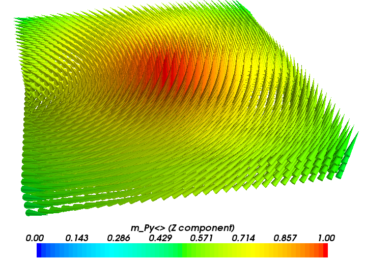
The magnetisation at the end of the relaxation process:
The relaxed vortex is much smaller than the initial one. The
important thing to notice is that such a magnetisation configuration
has now been saved into the file vortex_m.h5 which will be used as
the initial magnetisation for part II of this simulation, where we
study the current driven dynamics of the vortex.
For part II we need to use a slightly modified version of the script
used for part I. Here is the full listing of
stt.py :
# We model a bar 100 nm x 100 nm x 10 nm where a vortex sits in the center.
# This is part II: we load the vortex from file and apply a spin-polarised current
import nmag
from nmag import SI, every, at
# Define the material
mat_Py = nmag.MagMaterial(name="Py",
Ms=SI(0.8e6,"A/m"),
exchange_coupling=SI(13.0e-12, "J/m"),
llg_gamma_G=SI(0.2211e6, "m/A s"),
llg_polarisation=1.0,
llg_xi=0.05,
llg_damping=0.1)
# Define the simulation object and load the mesh
sim = nmag.Simulation()
sim.load_mesh("pyfilm.nmesh.h5", [("Py", mat_Py)], unit_length=SI(1e-9,"m"))
# Set the initial magnetisation: part II uses the one saved by part I
sim.load_m_from_h5file("vortex_m.h5")
sim.set_current_density([1e12, 0, 0], unit=SI("A/m^2"))
sim.set_params(stopping_dm_dt=0.0) # * WE * decide when the simulation should stop!
sim.relax(save=[('fields', at('convergence') | every('time', SI(1.0e-9, "s"))),
('averages', every('time', SI(0.05e-9, "s")) | at('stage_end'))],
do = [('exit', at("time", SI(10e-9, "s")))])
We now discuss the script with particular emphasis on the differences
with the first one. One difference lies in the material definition:
# Define the material
mat_Py = nmag.MagMaterial(name="Py",
Ms=SI(0.8e6,"A/m"),
exchange_coupling=SI(13.0e-12, "J/m"),
llg_gamma_G=SI(0.2211e6, "m/A s"),
llg_polarisation=1.0,
llg_xi=0.05,
llg_damping=0.1)
Here we use two new arguments for the MagMaterial class.
The first is llg_polarisation which is used to specify the spin polarisation
of the conduction electrons inside the given material.
The second, llg_xi, is used to specify the degree of non-adiabaticity.
Note that for the damping parameter, llg_damping, we are now using
a smaller value, 0.1 (these values are not realistic for Permalloy).
The script then continues by creating the simulation object
and loading the mesh (which is identical to the relaxation script shown in part I). The initial magnetisation is read from the vortex_m.h5 file:
# Set the initial magnetisation: part II uses the one saved by part I
sim.load_m_from_h5file("vortex_m.h5")
Here we use the function load_m_from_h5file to load the magnetisation
from the file vortex_m.h5, which was created in part I by using
the function save_restart_file.
We set the current density:
sim.set_current_density([1e12, 0, 0], unit=SI("A/m^2"))
The current density has norm 10^12 A/m^2 and is aligned in the x
direction. We then disable the convergence check:
sim.set_params(stopping_dm_dt=0.0) # * WE * decide when the simulation should stop!
Here we decide that convergence should be reached when the magnetisation moves
less than 0.0 degrees per nanosecond. This cannot happen and hence convergence
is never reached: we'll tell the relax method to exit after a fixed amount
of time has been simulated:
sim.relax(save=[('fields', at('convergence') | every('time', SI(1.0e-9, "s"))),
('averages', every('time', SI(0.05e-9, "s")) | at('stage_end'))],
do = [('exit', at("time", SI(10e-9, "s")))])
We run the simulation for just 10 nanoseconds by forcing an exit with
('exit', at("time", SI(10e-9, "s"))). We also save the fields
every nanosecond and save the averages more often, every 50
picoseconds. The relax method will simulate a vortex "hit" by a spin
polarised current and will save the averages so that we can see how
the magnetisation changes in time.
To run the script (which takes of the order of half an hour) we use as usual:
$ nsim stt.py
The output files for this simulation will start with the prefix stt.
The script saves the average magnetisation periodically in time.
We can therefore plot it using the following gnuplot script:
set term postscript color eps enhanced
set out "m_of_t.eps"
set xlabel "time (ns)"
set ylabel "average magnetisation (10^6 A/m)"
plot [0:10] \
"m_of_t.dat" u ($1*1e9):($2/1e6) t "<M_x>" w lp, \
"" u ($1*1e9):($3/1e6) t "<M_y>" w lp, \
"" u ($1*1e9):($4/1e6) t "<M_z>" w lp
to obtain the following graph:
The simulation carried out here is a (coarse) version of the recently
proposed standard problem for spin transfer torque micromagnetic
studies .
This is the second example we provide in order to illustrate the usage
of the Zhang-Li extension to model spin-transfer-torque in Nmag.
While in the Current-driven motion of a vortex in a thin film example we tried to present two scripts (one for initial relaxation, and one for the spin torque transfer simulation),
sacrificing usability for the sake of clarity, here we'll try to present
a real-life script, using the power of the Python programming language
as much as it is needed to achieve our goal.
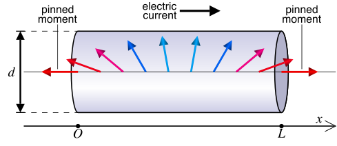
We consider a ferromagnetic nanopillar in the shape of a cylinder.
We assume that the magnetisation in the nanopillar is pinned in the two
faces of the cylinder along opposite directions: on the right face
the magnetisation points to the right, while on the left face it points
to the left. The magnetisation is then forced to develop a domain wall.
We then study how such an "artificial" domain wall interacts with a current
flowing throughout the cylinder, along its axis.
By "artificial" we mean that the domain wall is developed as a
consequence of the pinning, which we artificially impose. In real
systems, the pinning can be provided through interface exchange
coupling or may have a geometrical origin, in combination with
suitable material parameters. The situation we consider here is
described and studied in more detail in publications and .
The nanopillar is made of Permalloy and has the shape of a cylinder with
radius of 10 nm and length 30 nm. The mesh is loaded from the file
l030.nmesh.h5
which was created using Netgen from the file
l030.geo.
The simulation is subdivided into two parts, similarly to the previous
example:
- In part I, the system is relaxed to obtain the initial magnetisation
configuration when the current is not applied.
- In part II the current is applied to the artificial domain wall
whose shape was calculated in part I.
This time, however, we use just one single script to execute both
parts of the simulation in one go. In particular, we define a
function which takes some input parameters such as the current
density, the damping, etc and uses them to carry out a simulation. We
then call this function twice: once for part I and once for part
II.
The full listing of the script stt_nanopillar.py:
import nmag, os, math
from nmag import SI, every, at
from nsim.si_units.si import degrees_per_ns
l = 30.0 # The nanopillar thickness is 30 nm
hl = l/2 # hl is half the nanopillar thickness
relaxed_m_file = "relaxed_m.h5" # File containing the relaxed magnetisation
mesh_name = "l030.nmesh.h5" # Mesh name
mesh_unit = SI(1e-9, "m") # Unit length for space used by the mesh
def run_simulation(sim_name, initial_m, damping, stopping_dm_dt,
j, P=0.0, save=[], do=[], do_demag=True):
# Define the material
mat = nmag.MagMaterial(
name="mat",
Ms=SI(0.8e6, "A/m"),
exchange_coupling=SI(13.0e-12, "J/m"),
llg_damping=damping,
llg_xi=SI(0.01),
llg_polarisation=P)
# Create the simulation object and load the mesh
sim = nmag.Simulation(sim_name, do_demag=do_demag)
sim.load_mesh(mesh_name, [("np", mat)], unit_length=mesh_unit)
# Set the pinning at the top and at the bottom of the nanopillar
def pinning(p):
x, y, z = p
tmp = float(SI(x, "m")/(mesh_unit*hl))
if abs(tmp) >= 0.999:
return 0.0
else:
return 1.0
sim.set_pinning(pinning)
if type(initial_m) == str: # Set the initial magnetisation
sim.load_m_from_h5file(initial_m) # a) from file if a string is provided
else:
sim.set_m(initial_m) # b) from function/vector, otherwise
if j != 0.0: # Set the current, if needed
sim.set_current_density([j, 0.0, 0.0], unit=SI("A/m^2"))
# Set additional parameters for the time-integration and run the simulation
sim.set_params(stopping_dm_dt=stopping_dm_dt,
ts_rel_tol=1e-7, ts_abs_tol=1e-7)
sim.relax(save=save, do=do)
return sim
# If the initial magnetisation has not been calculated and saved into
# the file relaxed_m_file, then do it now!
if not os.path.exists(relaxed_m_file):
# Initial direction for the magnetisation
def m0(p):
x, y, z = p
tmp = min(1.0, max(-1.0, float(SI(x, "m")/(mesh_unit*hl))))
angle = 0.5*math.pi*tmp
return [math.sin(angle), math.cos(angle), 0.0]
save = [('fields', at('step', 0) | at('stage_end')),
('averages', every('time', SI(5e-12, 's')))]
sim = run_simulation(sim_name="relaxation", initial_m=m0,
damping=0.5, j=0.0, save=save,
stopping_dm_dt=1.0*degrees_per_ns)
sim.save_restart_file(relaxed_m_file)
del sim
# Now we simulate the magnetisation dynamics
save = [('averages', every('time', SI(9e-12, 's')))]
do = [('exit', at('time', SI(6e-9, 's')))]
run_simulation(sim_name="dynamics", initial_m=relaxed_m_file, damping=0.02,
j=0.1e12, P=1.0, save=save, do=do, stopping_dm_dt=0.0)
After importing the required modules, we define some variables such as
the length of the cylinder, l; the name of the file where to put
the relaxed magnetisation, relaxed_m_file; the name of the mesh,
mesh_name; its unit length, mesh_unit:
l = 30.0 # The nanopillar thickness is 30 nm
hl = l/2 # hl is half the nanopillar thickness
relaxed_m_file = "relaxed_m.h5" # File containing the relaxed magnetisation
mesh_name = "l030.nmesh.h5" # Mesh name
mesh_unit = SI(1e-9, "m") # Unit length for space used by the mesh
These quantities are used later in the script. For example, knowing
the length of the nanopillar is necessary in order to set a proper
initial magnetisation for the relaxation. By making this a parameter
at the top of the program, we can change it there (if we wan to study
the same system for a different l), and just run the script again.
We define the function run_simulation: we teach Python how to run
a simulation given some parameters, such as the initial magnetisation,
the damping, the current density, etc. The function is defined
starting with the line:
def run_simulation(sim_name, initial_m, damping, stopping_dm_dt,
j, P=0.0, save=[], do=[], do_demag=True):
The arguments of the function (the names inside the parenthesis) are
those parameters which must be choosen differently in part I and part II.
For example, we decided to make the current density j an argument
for the function run_simulation, because in part I j must be set
to zero, while in part II it must be set to some value greater than zero.
On the other hand, the saturation magnetisation does not appear
in the argument list of the function, since it has the same value
both in part I and part II.
A remark about the Python syntax: arguments such as sim_name
must be specified explicitly when using the function run_simulation,
while arguments such as P=0 have a default value (0.0 in this case)
and the user may omit them, meaning that Python will then use
the default values.
We skip the explanation of the body of the function and focus on the code which
follows it. We'll return later on the implementation of run_simulation.
For now, the user should keep in mind that run_simulation just runs
one distinct micromagnetic simulation every time it is called (and what simulation this is will depend on the parameters given to the function). The function returns
the simulation object which it created.
We now comment the code which follows the function run_simulation:
# If the initial magnetisation has not been calculated and saved into
# the file relaxed_m_file, then do it now!
if not os.path.exists(relaxed_m_file):
# Initial direction for the magnetisation
def m0(pos):
x, y, z = pos
tmp = min(1.0, max(-1.0, float(SI(x, "m")/(mesh_unit*hl))))
angle = 0.5*math.pi*tmp
return [math.sin(angle), math.cos(angle), 0.0]
save = [('fields', at('step', 0) | at('stage_end')),
('averages', every('time', SI(5e-12, 's')))]
sim = run_simulation(sim_name="relaxation", initial_m=m0,
damping=0.5, j=0.0, save=save,
stopping_dm_dt=1.0*degrees_per_ns)
sim.save_restart_file(relaxed_m_file)
del sim
This piece of code carries out part I of the simulation: it relaxes
the system starting from a sensible initial guess for the
magnetisation and saves the relaxed magnetisation configuration so
that it can be used in part II.
In more detail, it starts by checking (using the function
os.path.exists) if a file containing the initial magnetisation
exists. If this is not the case, then the following indented block
will be executed, which computes and saves this initial
magnetisation. If the file exists, the whole indented block is
skipped, and we go straight to part II of the calculation.
In order to compute the relaxed configuration, an initial guess m0
for the magnetisation is defined. Such magnetisation linearly rotates
from left to right as the position changes from the left face to the
right face of the cylinder. Here x is the x coordinate of the
position vector p and tmp = min(1.0, max(-1.0, float(SI(x,
"m")/(mesh_unit*hl)))) is a continuous function which changes
linearly from -1 to 1 when going from the left to the right face,
keeping constant outside the cylinder.
In the code above we also define the variable save which is used
to specify when and what should be saved to disk. Here we save the
fields before and after the relaxation and save the averages every 5
picoseconds.
We then call the run_simulation function we defined above to relax
the magnetisation. This function returns the simulation object
sim, which we use to save the magnetisation using the
save_restart_file function.
Once this is done, we delete the simulation object, releasing resources
(memory) we have used for the simulation of part I. Note that for
the relaxation, we use j=0.0 (zero current density), damping=0.5
(fast damping, to reach convergence quickly) and
stopping_dm_dt=1.0*degrees_per_ns (this means that the simulation
should end when the magnetisation moves slower than 1 degree per
nanosecond).
The following part of the script deals with part II, the computation
of the current-driven dynamics:
# Now we simulate the magnetisation dynamics
save = [('averages', every('time', SI(9e-12, 's')))]
do = [('exit', at('time', SI(6e-9, 's')))]
run_simulation(sim_name="dynamics",
initial_m=relaxed_m_file,
damping=0.02,
j=0.1e12,
P=1.0,
save=save,
do=do,
stopping_dm_dt=0.0)
Here we decide to save the averages every 9 picoseconds and exit the
simulation after 6 nanoseconds. We use stopping_dm_dt=0.0 to
disable the convergence check (here we just want to simulate for a
fixed amount of time). We also use full spin polarisation, P=1.0,
we apply a current density of j=0.1e12 A/m^2 and use a realistic
damping parameter for Permalloy, damping=0.02. For the initial
magnetisation we pass the name of the file where the relaxed
magnetisation was saved in part I and we specify a simulation name
sim_name="dynamics" which is different from the one used for the
relaxation (which was sim_name="relaxation"). The simulation name
will decide the prefix of any filenames that are being created when
saving data. (If the simulation name is not specified, the name of the
script file is used.)
We now return to discuss the function run_simulation and see how
it carries out the actual simulations. First, the function defines the
material:
# Define the material
mat = nmag.MagMaterial(
name="mat",
Ms=SI(0.8e6, "A/m"),
exchange_coupling=SI(13.0e-12, "J/m"),
llg_damping=damping,
llg_xi=SI(0.01),
llg_polarisation=P)
It uses the variable P which is passed as an argument to the function.
Then the simulation object is created and the mesh is loaded:
# Create the simulation object and load the mesh
sim = nmag.Simulation(sim_name, do_demag=do_demag)
sim.load_mesh(mesh_name, [("np", mat)], unit_length=mesh_unit)
Note that sim_name is passed to the Simulation object,
allowing the user to use different prefixes for the output files
of the simulation. For example, if sim_name = "relaxation",
then the output files produced when saving the fields or their averages
to disk will have names starting with the prefix relaxation_.
On the other hand, if sim_name = "dynamics", the names of these files
will all start with the prefix dynamics_.
Using different simulation names allows us to save the data of part I
and part II in different independent files. The function continues
with the code above:
# Set the pinning at the left and right face of the nanopillar
def pinning(p):
x, y, z = p
tmp = float(SI(x, "m")/(mesh_unit*hl))
if abs(tmp) >= 0.999:
return 0.0
else:
return 1.0
sim.set_pinning(pinning)
which is used to pin the magnetisation at the left and right faces of
the cylinder. Note here that x is the x component of the position
of the mesh site and that:
tmp = float(SI(x, "m")/(mesh_unit*hl))
is equal to -1 at the right face, and to +1 at the left face.
We then set the magnetisation. If initial_m is a string,
then we assume it is the name of the file and load the magnetisation
with the method load_m_from_h5file, otherwise we assume it is just
a function and set the magnetisation in the usual way, using the method
set_m:
if type(initial_m) == str: # Set the initial magnetisation
sim.load_m_from_h5file(initial_m) # a) from file if a string is provided
else:
sim.set_m(initial_m) # b) from function/vector, otherwise
We then set the current density along the x direction
(only if j is not zero):
if j != 0.0: # Set the current, if needed
sim.set_current_density([j, 0.0, 0.0], unit=SI("A/m^2"))
Finally, we set tolerances, the stopping criterion and launch the simulation:
# Set additional parameters for the time-integration and run the simulation
sim.set_params(stopping_dm_dt=stopping_dm_dt,
ts_rel_tol=1e-7, ts_abs_tol=1e-7)
sim.relax([None], save=save, do=do)
return sim
The relax function carries out the simulation, taking into account the stopping criterion and save and do actions. Finally, the function returns the simulation object which it created.
We launch the script with:
$ nsim stt_nanopillar.py
The script runs both part I (output files starting with relaxation_)
and part II (output files starting with dynamics_).
The relaxed magnetisation can be extracted and saved into a vtk file using
the command nmagpp relaxation --vtk=m.vtk. MayaVi can then be used
to obtain the following picture:
We can now take a look at the results obtained for the dynamics.
The average magnetisation as a function of time can be extracted
using:
ncol dynamics time M_mat_0 M_mat_1 M_mat_2 > m_of_t.dat
We can use the following gnuplot script:
set term postscript color eps enhanced solid
set out "m_of_t.eps"
set xlabel "time (ns)"
set ylabel "average magnetisation (10^6 A/m)"
plot [0:6] \
"m_of_t.dat" u ($1*1e9):($2/1e6) t "<M_x>" w l, \
"" u ($1*1e9):($3/1e6) t "<M_y>" w l, \
"" u ($1*1e9):($4/1e6) t "<M_z>" w l
and obtain the following graph:
The sinusoidal dependence of the y and z magnetisation components suggests
that the magnetisation rotates around the nanopillar axis with a frequency
which increases to approach its maximum value.
A more detailed discussion of results and interpretation is provided
in the publications and mentioned in section Example: Current-driven magnetisation precession in nanopillars.
Nmag uses the hybrid finite element method/boundary element method
(hybrid FEM/BEM) to compute the demagnetisation field (as does
Magpar). Not using this method, one would have to discretise a large
part of space arround the magnetic structure (ideally all
space). Using the hybrid FEM/BEM method, it is only necessary to
discretise (and solve the equations for the demag field on that
discretisation) those parts of space that are occupied by magnetic
material.
A disadvantage of the hybrid FEM/BEM method is that it involves the
assembly of a dense boundary element matrix B, whose number of
elements scales quadratically with the number of surface nodes N of
our finite element mesh, i.e. the matrix B has as many rows as there are
surface nodes N in the mesh (and also as many columns).
This is in particular an issue when studying flat structures such as
thin films. For example, imagine we model a thin film of side lengths
100 nm x 100 nm x 2nm. If we decide to double the side lengths to 200
nm x 200 nm x 2nm, then this roughly corresponds to an increase of
surface node numbers N by a factor of 4. The matrix B will then
grow in size by a factor 4^2=16 due to the doubling of the two side
lengths by a factor of 2. In practice, the memory requirements of the
matrix B often limit the size of a structure that can be modelled.
In order to improve the efficiency of the hybrid FEM/BEM, one can
employ techniques which involve some kind of approximation of B,
for example using hierarchical matrices.
The basic idea idea
is to approximate submatrices of B by a data-sparse approximation
where possible (within user-provided tolerance margins). In general
the complexity of the storage requirements and execution time of
simple operations like the matrix-vector product scale as O(N*log(N)),
as compared to the quadratical costs N^2 using the standard matrix
representation. For the use of HLib hierarchical matrices in
micromagnetic simulations we are often mostly interested in the their
reduced memory requirements.
The library HLib contains implementations of this hierarchical matrix
methodology, and can be used with Nmag in order to run micromagnetic
simulations in a more memory efficient way (see for example Knittel
et al 105, 07D542 (2009), postprint pdf).
.
In order to be able to use the HLib library and to obtain the HLib source
code, you have to apply for an HLib licence as explained on
http://hlib.org/license.html.
Once the HLib authors grant a licence, they will send their HLib tarball. Nmag will have to be compiled from source (see install from source) in the presence of this tarball to make use of it.
We describe the required steps for this in detail. We assume you
downloaded the HLib tarball and the Nmag tarball in your home
directory ~/ (but any other subdirectory will work fine). Then, if
you issue a ls command, you get something like:
me@mymachine:~/$ ls
HLib-1.3p19.tar.gz nmag-0.1-all.tar.gz
You can now untar the nmag tarball and enter the newly created directory:
me@mymachine:~/$ tar xzvf nmag-0.1-all.tar.gz
me@mymachine:~/$ cd nmag-0.1
Inside the directory nmag-0.1 there is a directory called
hlib-pkg and we need to copy (or move) the HLib tarball into this directory:
me@mymachine:~/nmag-0.1$ cp ../HLib-1.3p19.tar.gz hlib-pkg/
You can now compile Nmag in the usual way:
me@mymachine:~/nmag-0.1$ make
The build system should recognise that the hlib-pkg directory contains
a tarball and should prompt you asking what to do:
me@mymachine:~/nmag-0.1$ make
bash ./patches/hlib/hlib-untar.sh ./hlib-pkg HLib-1.3p19.tar.gz && \
rm -f .deps_hlib_patch && make .deps_hlib_install; true
_____________________________________________________
It seems you want to compile Nmag with HLib support
I'll need your confirmation in order to proceed...
I found ./hlib-pkg/HLib-1.3p19.tar.gz
Is this the HLib tarball you want to use? (yes/no) yes
Type yes and ENTER. The build system should untar the HLib tarball, it
should patch it (HLib needs to be patched in order to be usable by Nmag)
and it should install it in the right location with respect to the Nmag
libraries. If all goes well, you should get an installation of Nmag which is
capable of using HLib for the compression of the BEM matrix.
As you see, the only additional step which is required with respect to the
normal procedure for compiling Nmag from source, is to put the HLib tarball
inside the directory nmag-0.1/hlib-pkg.
The current nmag release requires Hlib version 1.3p19.
There is a test target make checkhlib which tests whether a demag
field can be computed using the HLib and compares this with the result
of the same calculation using a full BEM. If the deviations become large,
the test will fail. To run the test, do
me@mymachine:~/nmag-0.1$ make checkhlib
The test should take less than 5 minutes. If it passes, then it
appears that the hlib is used, and produces quantitatively appropriate
approximations of the true solution.
The properties of a hierarchical matrix depend much on the settings of
different parameters and on the particular algorithm used to create
the low-rank approximations. In Nmag, we only use the HCA II
algorithm, which seems to be the most reliable amongst the commonly
used algorithms, being still very efficient (see for example Knittel et al 105,
07D542 (2009),
postprint pdf).
The performance and accuracy of the HCA II algorithm can be tuned by providing
a number of parameters, which are collected inside a HMatrixSetup object.
A default HMatrixSetup object is provided, where a reasonable choice of
these parameters is made. The default parameters can be overriden by users.
We point the reader to the documentation of the HMatrixSetup class
for a list and description of all avaliable parameters. The next
example shows how to use HLib with the default values for the setup of
the BEM matrix.
2.22.4.1 Using HLib with default parameters
The Nmag script sphere_hlib.py shows how Nmag can be used in order to compute
the demagnetisation field within a sphere with a radius of 50 nm.
import nmag
import time
from nmag import SI
# When creating the simulation object, specify that the BEM hmatrix should be
# set up by using the default parameters.
sim = nmag.Simulation(phi_BEM=nmag.default_hmatrix_setup)
# Specify magnetic material, parameters chosen as in example 1
Py = nmag.MagMaterial(name="Py",
Ms=SI(1e6, "A/m"),
exchange_coupling=SI(13.0e-12, "J/m"))
# Load the mesh
sim.load_mesh('sphere.nmesh.h5',
[('sphere', Py)],
unit_length=SI(1e-9, 'm'))
# Set the initial magnetisation
sim.set_m([1,0,0])
# Save the demagnetisation field
sim.save_data(fields=['H_demag'])
# Probe the demagnetisation field at ten points within the sphere
for i in range(-5,6):
x = i*1e-9
Hdemag = sim.probe_subfield_siv('H_demag', [x,0,0])
print "x=", x, ": H_demag = ", Hdemag
In this first example, we use default parameters for setting up the BEM
matrix by passing the object nmag.default_hmatrix_setup to the
Simulation object:
sim = nmag.Simulation(phi_BEM=nmag.default_hmatrix_setup)
This command specifies that the BEM matrix should be set up using the default
parameters in nmag.default_hmatrix_setup.
(The actual values of the parameters can be visualised on the screen by simply
printing the object with import nmag; print nmag.default_hmatrix_setup.)
When running the simulation sphere_hlib.py using the usual command:
nsim sphere_hlib.py --clean,
it should print out the demagnetisation field at ten points along the line
(x,0,0):
x= -5e-09 : H_demag = [-333060.61988567741, -16.426569556599606, -63.649046900628299]
x= -4e-09 : H_demag = [-333061.67213255615, -17.81158234138228, -65.112039406898973]
x= -3e-09 : H_demag = [-333062.69422596297, -19.401486521725044, -66.015626464953897]
x= -2e-09 : H_demag = [-333062.72991753434, -20.940683675745074, -66.988296036794026]
x= -1e-09 : H_demag = [-333061.60282647074, -22.420106762492924, -68.042400926888646]
x= 0.0 : H_demag = [-333060.29023012909, -23.736721821840622, -68.984395930340639]
x= 1e-09 : H_demag = [-333058.66039082204, -24.758745874347209, -69.6797361890888]
x= 2e-09 : H_demag = [-333055.87727687479, -24.635979967196079, -70.705429412122513]
x= 3e-09 : H_demag = [-333054.17167091055, -24.9868363963913, -73.501799477569747]
x= 4e-09 : H_demag = [-333052.78687652596, -25.388604442091431, -76.097088958697071]
x= 5e-09 : H_demag = [-333051.43416558538, -25.507782471847442, -77.792885797356391]
As in example 1 of our guided tour, we should obtain a constant
magnetic induction of about [333333,0,0] [A/m]. Deviations from that value
can be mainly ascribed to the discretisation errors of the finite
element method (rather than the error due to the approximation with
hierarchical matrices). To see this, we use sphere_fullBEM.py which carries out the same
calculation but uses the normal full BEM. It reports:
x= -5e-09 : H_demag = [-333065.71403658605, -5.2685406972238447, -55.70105442854085]
x= -4e-09 : H_demag = [-333067.37484881631, -4.2116117445407726, -57.778611300679266]
x= -3e-09 : H_demag = [-333068.83107133937, -3.7372238611028603, -59.825445387210245]
x= -2e-09 : H_demag = [-333069.28217968839, -2.9635031726006642, -62.513814422201456]
x= -1e-09 : H_demag = [-333067.6639511605, -1.5730916838594211, -66.546659227740889]
x= 0.0 : H_demag = [-333066.04572263273, -0.18268019511817793, -70.579504033280344]
x= 1e-09 : H_demag = [-333064.22835497675, 0.79797869001455679, -74.851480234723581]
x= 2e-09 : H_demag = [-333060.20872696047, 2.9088218728650852, -77.0823444044496]
x= 3e-09 : H_demag = [-333056.59267071093, 5.064110260421554, -80.187548021318634]
x= 4e-09 : H_demag = [-333052.97641355224, 7.2199889195136837, -83.294534914159939]
x= 5e-09 : H_demag = [-333051.27043353132, 9.4396856537516776, -85.662174893158024]
This shows that the error introduced by the HLib is of the order of 10
in 333333 (in this example). Note that the y and z component
theoretically should be zero (for both calculations: with and without
HLib), and that the error we see there (of the order of 60/333333 in
the z-component) is coming from approximating the spherical shape with
tetrahedra, and approximating the magnetisation with a piecewise
linear function (not primarily from using the HLib approximation of the BEM).
2.22.4.2 HLib Memory usage
Nmag will also provide information on the memory requirements for the
hierarchical matrix. First it will print to stdout (and here
exceptionally not write to the log file) the following lines to the
screen, which are each preceded by HLib:
HLib: Memory footprint of hierarchical matrix: 10.523720 MB.
HLib: Equivalent full matrix would require: 98.273628 MB.
HLib: The compression rate is 10.71%
The first line states the amount of memory required for the storage of the
hierarchical matrix, the second one states the equivalent memory requirements
when using the full boundary element matrix, and the last line gives the
corresponding compression rate. Furthermore Nmag creates the file
memory_info.dat, which in our example looks like:
Number of surface nodes: 3589
Size of hierarchical matrix: 10.52 MB
Total size of inadmissible leaves: 1.40 MB
Total size of admissible leaves: 8.96 MB
While the first two lines should be relatively self-explanatory, the third
line states the total amount of memory needed to store the matrix blocks
which cannot be approximated, while the fourth line gives the equivalent
number for the approximated matrix blocks. Additionally, one can obtain
the memory used for the hierarchical tree structure itself, by computing
the difference between the size of the hierarchical matrix and
the sum of the total sizes of the admissible and inadmissible leaves.
2.22.4.3 Changing the Parameters of HLib
Let us assume we want to run the simulation of the last section again, but this
time we would like to reduce the time needed to assemble our hierarchical
matrix. To achieve this, we coarsen the hierarchical tree by increasing the
parameter nmin to 50, reassign the parameter eps_aca to 1e-5 in order to
decrease the accuracy of the HCA II algorithm, and reduce the accuracy of
the numerical integration by setting the parameter quadorder to 2.
To use non-default settings in a new script sphere_hlib2.py we add one line to create an HMatrixSetup object
#create an HLib object
hms = nmag.HMatrixSetup(nmin=50, eps_aca=1e-5, quadorder=2)
This object is then passed to the Simulation object:
sim = nmag.Simulation(phi_BEM=hms)
In order to make the time measurement you can just run the nsim command
with a preceding 'time', i.e.
time nsim sphere_hlib2.py --clean
do the same with the sphere_hlib.py script, and compare the execution times. Alternatively,
search for the string like "Populating BEM took 25.094362 seconds" in the log file/output.
The execution time of the second script should be smaller (see also Using HLib Example 2: Thin Films).
For completeness: the Hdemag values computed with this script are:
x= -5e-09 : H_demag = [-333060.73884748813, -5.7471691393211453, -56.164777361260889]
x= -4e-09 : H_demag = [-333062.34355895646, -4.6973695734449556, -58.19523338342605]
x= -3e-09 : H_demag = [-333063.7357911733, -4.2543955018989577, -60.199068292632305]
x= -2e-09 : H_demag = [-333064.14913635491, -3.5107100192801424, -62.841949236542568]
x= -1e-09 : H_demag = [-333062.54691465426, -2.1473409122582736, -66.824386136704007]
x= 0.0 : H_demag = [-333060.94469295366, -0.78397180523640564, -70.806823036865438]
x= 1e-09 : H_demag = [-333059.14023403701, 0.15188988623380831, -75.030255790251871]
x= 2e-09 : H_demag = [-333055.17692864774, 2.2289146769013355, -77.213961296827563]
x= 3e-09 : H_demag = [-333051.63216875959, 4.3434799953307275, -80.273150211395659]
x= 4e-09 : H_demag = [-333048.08718075219, 6.4586908275326955, -83.334113807086638]
x= 5e-09 : H_demag = [-333046.47566667694, 8.6375699926922742, -85.648195356633963]
In this example we consider square thin films with a thickness of 10
nm (in z-direction), and a varying edge length (in x and y directions)
between 20 and 130 nm . The magnetisation within those films is
initially homogeneously aligned and points out-of-plane. We then use
Nmag's relax routine in order to evolve the magnetisation field to an
energetically (meta-)stable state.
In order to estimate the efficiency benefits of hierarchical matrices,
the simulations are executed twice: (i) with and (ii) without
hierarchical matrices. Optimal damping is ensured by setting the
damping constant of the LLG equation to 1. To increase the efficiency
of the relaxation the tolerance of the time-stepper has been increased
to 1e-5 (see Example: Timestepper tolerances).
For our estimation of the efficiency we measure the time needed for
the setup of our simulation (basically the time for populating the
finite element and boundary element matrices), the time for relaxing
the system, and the memory consumption at the end of the simulation,
which should be roughly equal to the maximal value throughout the
simulation.
For each film size and either use of the full BEM or the approximation through hierarchical matrices, a separate nsim script file
(thinfilm20_full.py,
thinfilm40_full.py,
thinfilm60_full.py, ...,
thinfilm20_hlib.py, etc.)
has been written. It is important to start every simulation as a
single process (by calling nsim thinfilm20_full.py --clean etc.),
so that there are no overlaps in the memory access of different
simulations. From every script a routine run_simulation which is
imported from a local nsim module simtools.py, starts a simulation specified by
its arguments (name of the simulation, name of the mesh file, name of
hlib object in case hierarchical matrices are used, and the tolerance
for the time integrator) and returns the number of nodes of the mesh,
the simulation's memory consumption and the setup- and relaxation
times. These values are then written to a file timings_hlib.dat or
timings_full.dat, respectively.
Beside extracting the information on the performance, it is also important to
check, whether simulations using the full boundary element matrix and a
hierarchical matrix approximation actually do the same, and that the simulated
behaviour is physically correct.
Looking at the spatially averaged magnetisation we find a very good agreement
between both simulation types (example given for the film with an edge length of
100nm):
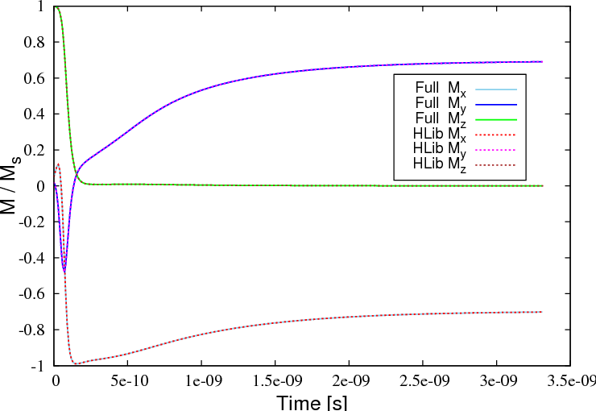
The magnetisation field moves from its out-of-plane configuration into the plane
and relaxes into a high remanent state, which is aligned along the diagonal of the
square base. The plot below shows a 3d visualisation of the relaxed magnetisation
field (obtained with Mayavi2) for a thin film with an edge length of 130 nm.
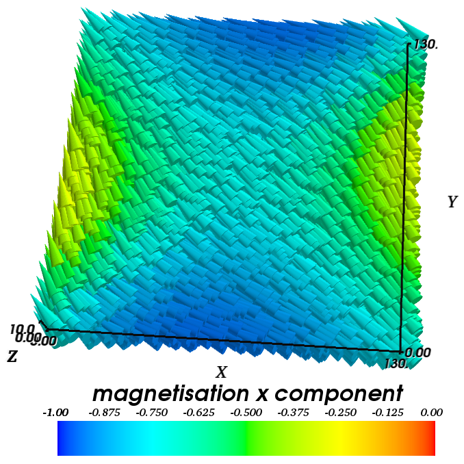
We have run the simulations on a machine with an
AMD Athlon(tm) 64 X2 Dual Core Processor 3800+, using only one core. The
graphs below show the results of our efficiency test of hierarchical matrices.
It can be seen that the memory requirements are reduced considerably. While the
consumed memory increases (almost) linearly with the number of surface nodes N
for the calculation with hierarchical matrices, the increase is of a higher
order (O(N4/3)), when using the accurate boundary element matrix
B. The enhanced scaling behaviour allows for simulation of larger
ferromagnetic structures. The graph
on the memory consumption should enable users to estimate, whether they can
simulate a certain structure with Nmag+HLib and the available hardware.
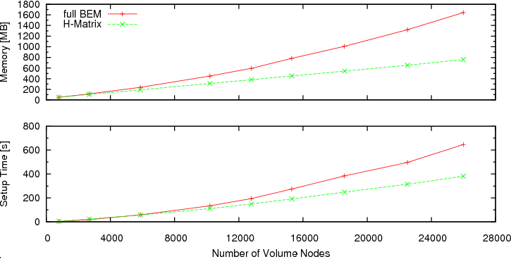
Besides the savings in memory, hierarchical matrices also reduce the time needed
for the simulation setup considerably (see the bottom graph).
The HLib library that is available for academic use does not support
parallel execution. It is thus stored on the master node, and cannot
be distributed over several nodes. Simulations using the Hlib library
can use MPI (for all other calculations).
The tolerance settings of a simulation can greatly affect the
performance, the accuracy and the usefulness of a simulation. Section
Solvers and tolerance settings provides an overview. In this
example, we demonstrate
- how the time integrator's tolerances can be set and
- how these tolerances affect the simulation results and performance.
The time integrator we use is the PVODE solver from the SUNDIALS
package. It is optimised to deal with stiff systems of ordinary
differential equations and is therefore very suited for micromagnetic
simulations. It can also execute in parallel (i.e. across several CPUs
at the same time using MPI). The computational challenge of the time
integration lies in the different time scales associated with the
(fast) exchange field and the (slower) demagnetisation field.
Sundials provides two parameters rtol and atol (see sundials
documentation)
to control the required accuracy of the calculations. Sundials uses
these parameters to determine the number of iterations required to
simulate a given amount of real time (for example one pico
second). Equivalently, these parameters determine the amount of real
time that can be simulated per iteration.
It is common that the amount of time simulated per iteration varies
throughout a simulation as different time step sizes are required to
resolve the physics to the same accuracy level. (The ndt data file
contains one column last_step_dt which provides the size of the
time step. Use ncol to extract this data conveniently.)
The sundials tolerance parameters rtol and atol can be set in
nmag using the ts_rel_tol and ts_abs_tol arguments in the
set_params function. (The letters ts in ts_rel_tol and
ts_abs_tol stand for Time Stepper).
The integration of the Landau Lifshitz and Gilbert equation is carried
out on the normalised magnetisation, and the corresponding field
(see Fields and Subfields in nmag) is called m (the magnetisation with the saturation magnetisation magnitude is called capital M in nmag). Because this
field is normalised, we set rtol and atol to the same value in
this example, and refer to the value just as tol.
We use the program bar_tol.py that:
- re-uses the bar studied in example 2 but
- carries out the time integration for a number of different tolerance values.
import nmag
from nmag import SI
import time #python standard modules, used to measure run time
def run_sim(tol):
"""Function that is called repeatedly with different tolerance values.
Each function call is carrying out one simulation.
"""
mat_Py = nmag.MagMaterial(name="Py",
Ms=SI(0.86e6,"A/m"),
exchange_coupling=SI(13.0e-12, "J/m"),
llg_damping=0.5)
#compose name of simulation to inlude value of tolerance
sim = nmag.Simulation("bar_%.6f" % tol)
sim.load_mesh("bar30_30_100.nmesh.h5",
[("Py", mat_Py)],
unit_length=SI(1e-9,"m"))
sim.set_m([1,0,1])
#set tolerance (has to be called after set_m())
sim.set_params(ts_abs_tol=tol, ts_rel_tol=tol)
dt = SI(2.5e-12, "s")
timing = 0 #initialise variable to measure execution time
for i in range(0, 121):
timing -= time.time() #start measuring time
sim.advance_time(dt*i) #compute time development for 300ps
timing += time.time() #stop measuring time
#we exclude time required to save data
sim.save_data() #save averages every 2.5 ps
#at end of simulation, write performance data into summary file
f=open('resultsummary.txt','a') #open file to append
f.write('%g %d %g\n' % (tol,sim.clock['step'],timing))
f.close()
#main program
tols = [1e-1,1e-2,1e-3,1e-4,1e-5,1e-6]
for tol in tols:
run_sim(tol)
From a conceptual point of view, we see something new here: the section of the code that starts with:
def run_sim(tol):
defines a function with name run_sim which will carry out a
complete simulation every time it is called. It takes one argument:
the parameter tol. The simulation name (which is re-used in the
name of the ndt data file) contains the value of tol. For
example, if the tol=0.1, then the name of the simulation is
bar_0.100000 and the name of the ndt data file is
bar_0.100000_dat.ndt. We can thus call this function repeatedly
for different values of tol, and each time a complete simulation
will be run and new data files created.
The main loop of the script:
#main program
tols = [1e-1,1e-2,1e-3,1e-4,1e-5,1e-6,1.0]
for tol in tols:
run_sim(tol)
simply iterates over values 0.1, 0.01, 0.001, 0.0001, 0.00001 and
0.000001 and calls the function run_sim with a different
tolerance value in every iteration of the for-loop.
Once the program has finished, we have data files
bar_0.000001_dat.ndt, bar_0.000010_dat.ndt, ... and
bar_0.100000_dat.ndt that can be analysed and plotted in the usual
way.
We show a plot of the x, y and z components of the magnetisation
against time (as in example 2) for each of the tolerance
values. The run with tol=1e-6 is the most accurate, and the
corresponding black line has been tagged with little + characters.
We can see that curves seem to coincide (at this scale) apart from the
red tol=1e-1 curve which deviates somewhat.
We zoom in to region between 1.2e-10 seconds and 2e-10 seconds and
focus on the lowers curves in the main plot:
The better resolution reveals that there is a clear deviation of the
various curves: the red (0.1), indigo (0.01) and yellow (1e-3) curves
approach the black (1e-6) curve in this order. The blue (1e-4) and
green (1e-5) curves appear to coincide with the black reference curve.
Another zoom at the z-component of the magnetisation towards the end
of the simulated time interval (time>1.8e-10 seconds) shows that the
less accurate curves (red, and then indigo and yellow) show a large
amount of jitter (although following the reference curve on
average).
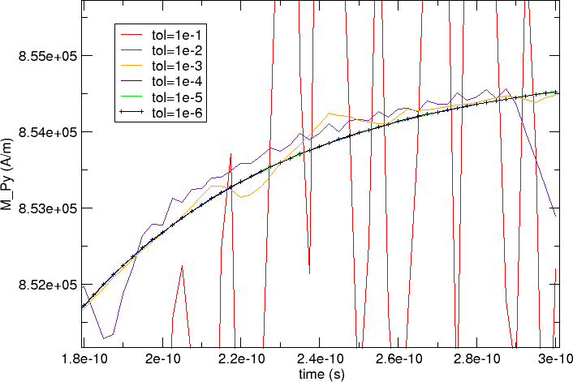
We conclude that we should use a tolerance of at most 1e-3 for this
simulation; better 1e-4 or smaller.
In simulation work, we are of course interested to get the most
accurate simulation results. However, in reality this is conflicting
with the increased run time that is associated with more accurate
simulations. In this example, we have written some performance data
into resultssummary.txt. Reformatted,
postprocessed and the rows re-ordered, this is the data complete with
table headings:
========== ========== ============== =====================
tol steps CPU time (s) CPU time per step (s)
========== ========== ============== =====================
0.000001 740 120.81 0.163
0.000010 356 62.37 0.175
0.000100 182 46.10 0.253
0.001000 119 66.36 0.558
0.010000 114 92.08 0.808
0.100000 88 94.69 1.076
========== ========== ============== =====================
The accuracy of the simulation results decreases from the top of the
table downwards. We know from the graphs above that we should use a
tolerance setting of 1e-4 or smaller to obtain fairly accurate results
(assuming that the 1e-6 curve is used as a reference).
The number of iterations required increases from the tolerance 1e-4 to
tolerance 1e-6 by a factor of 4 while the total CPU time increases by
a factor of 2.6.
Looking at the greater tolerances 1e-3 and 0.01, we see that while the
number of iterations required decreases, the CPU time is
increasing. This is the first indication that at this tolerance level
the system becomes difficult to treat efficiently by sundials (it
basically appears to be noisy and stochastic equations are hard to
integrate).
In summary,
- to minimise the simulation time, we need to choose a tolerance value
as large as "possible".
- The definition of "possible" will depend on the context. A good way
of obtaining a suitable tolerance value is to run the same simulation
repeatedly with decreasing tolerance values. Once the resulting curves
converge (as a function of decreasing tolerance settings), a good tolerance level
has been found. (This would be 1e-4 for the example shown here.)
- Choosing the tolerance values to be too large, can be counter
productive (and take much more CPU time than the lower accuracy
level).
- The default value for the sundials tolerances is shown in the
documentation of set_params. A simulation can often be accelerated
significantly by increasing this value.
- A change of the tolerances has to be considered together with the
convergence criterion for hysterises loop calculations (see next
section: Hysteris loop calculation not converging? A word of warning ...)
The hysteresis and the relax command need to have a criterion how to
decide when the simulation has reached a (meta)stable state and when
the relaxation (at a given applied field) should be considered to have
been reached. A common approach (which is used by OOMMF and nmag, for
example) is to monitor the change of the (normalised) magnetisation
with respect to time (i.e. dm/dt). If the absolute value of this drops
below a given threshold, then one considers the system as converged
(the relax command will return at this point, while the hysteresis
command will move to the next field). This threshold can be changed
from its default value with the set_params simulation method (the
attribute is stopping_dm_dt).
The choice of the tolerances (ts_rel_tol and ts_abs_tol) must
respect the chosen stopping_dm_dt value (or conversely
the stopping_dm_dt needs to be adapted to work with
the chosen tolerances):
large values for the tolerances correspond to lower accuracy
and to larger random fluctuations of dm/dt,
which consequently may never become lower than stopping_dm_dt.
In such a case the simulation never returns from the relax command,
because the convergence criterion is never satisfied.
In all the examples we have studied, we have found that the default
parameters work fine. However, if you find that a simulation never
returns from the hysteresis or relax command, it is worth reducing
the tolerances for the time stepper (on increasing stopping_dm_dt)
to see whether this resolves the problem).
Nmag's numerical core (which is part of the nsim multi-physics
library) has been designed to carry out numerical computation on
several CPUs simultaneously. The protocol that we are using for this
is the wide spread Message Passing Interface (MPI). There are a number
of MPI implementations; the best known ones are probably MPICH1,
MPICH2 and LAM-MPI. Currently, we support MPICH1 and MPICH2.
Which mpi version to use? Whether you want to use mpich1 or mpich2
will depend on your installation: currently, the installation from
source provides mpich2 (which is also used in the virtual machines)
whereas the Debian package relies on mpich1 (no Debian package is
provided after release 0.1-6163).
Before
the actual simulation is started, a multi-purpose daemon must be
started when using MPICH2.
The ``.mpd.conf`` file
MPICH2 will look for a configuration file with name .mpd.conf in
the user's home directory. If this is missing, an attempt to start
the multi-purpose daemon, will result in an error message like
this:
$> mpd
configuration file /Users/fangohr/.mpd.conf not found
A file named .mpd.conf file must be present in the user's home
directory (/etc/mpd.conf if root) with read and write access
only for the user, and must contain at least a line with:
MPD_SECRETWORD=<secretword>
One way to safely create this file is to do the following:
cd $HOME
touch .mpd.conf
chmod 600 .mpd.conf
and then use an editor to insert a line like
MPD_SECRETWORD=mr45-j9z
into the file. (Of course use some other secret word than mr45-j9z.)
If you don't have this file in your home directory, just follow the
instructions above to create it with some secret word of your choice
(Note that the above example is from a Mac OS X system: on Linux the
home directory is usually under /home/USERNAME rather than
/Users/USERNAME as shown here.)
Let's assume we have a multi-core machine with more than one
CPU. This makes the mpi setup slightly easier, and is also likely to
be more efficient than running a job across the network between
difference machines.
First, we need to start the multi-purpose daemon:
$> mpd &
It will look for the file ~/.mpd.conf as described above. If found, it will start silently. Otherwise it will complain.
2.24.1.1 Testing that nsim executes in parallel
First, let's make sure that nsim is in the search path. The command which nsim will return the location of the executable if it can be found in the search path. For example:
$> which nsim
/home/fangohr/new/nmag-0.1/bin/nsim
To execute nsim using two processes, we can use the command:
$> mpiexec -n 2 nsim
There are two useful commands to check whether nsim is aware of the intended MPI setup. The fist one is ocaml.mpi_status() which provides the total number of processes in the MPI set-up:
$> mpiexec -n 2 nsim
>>> ocaml.mpi_status()
MPI-status: There are 2 nodes (this is the master, rank=0)
>>>
The other command is ocaml.mpi_hello() and prints a short 'hello' from all processes:
>>> ocaml.mpi_hello()
>>> [Node 0/2] Hello from beta.kk.soton.ac.uk
[Node 1/2] Hello from beta.kk.soton.ac.uk
For comparison, let's look at the output of these commands if we start nsim without MPI, in which case only one MPI node is reported:
$> nsim
>>> ocaml.mpi_status()
MPI-status: There are 1 nodes (this is the master, rank=0)
>>> ocaml.mpi_hello()
[Node 0/1] Hello from beta.kk.soton.ac.uk
Assuming this all works, we can now start the actual simulation. To
use two CPUs on the local machine to run the bar30_30_100.py
program, we can use:
$> mpiexec -n 2 nsim bar30_30_100.py
To run the program again, using 4 CPUs on the local machine:
$> mpiexec -n 4 nsim bar30_30_100.py
Note that mpich2 (and mpich1) will spawn more processes than there are
CPUs if necessary. I.e. if you are working on some Intel Dual Core
processor (with 2 CPUs and one core each) but request to run your
program with 4 (via the -n 4 switch given to mpiexec), than
you will have 4 processes running on the 2 CPUs.
If you want to stop the mpd daemon, you can use:
$> mpdallexit
For diagnostic purposes, the mpdtrace command can be use to track
whether a multipurpose daemon is running (and which machines are part
of the mpi-ring).
Advanced usage of mpich2
To run a job across different machines, one needs to start the
multi-purpose daemons on the other machines with the mpdboot
command. This will search for a file (in the current directory) with
name mpd.hosts which should contain a list of hosts to participate
(very similar to the machinefile in MPICH1).
To trace which process is sending what messages to the standard out,
one can add the -l switch to the mpiexec command: then each
line of standard output will be preceded by the rank of the process
who has issued the message.
Please refer to the official MPICH2 documentation for further details.
Note: Most users will use MPICH2 (if they have compiled Nmag from the tar-ball): see Using mpich2
Suppose we would like to run example 2 of the manual with 2
processors using MPICH1. We need to know the full path to the nsim executable. In
a bash environment (this is pretty much the standard on Linux and
Mac OS X nowadays), you can find the path using the which
command. On a system where nsim was installed from the Debian package:
$> which nsim
/usr/bin/nsim
Let's assume we have a multi-core machine with more than one
CPU. This makes the mpi setup slightly easier, and is also likely to
be more efficient than running a job across the network between
difference machines. In that case, we can run the example on 2 CPUs using:
$> mpirun -np 2 /usr/bin/nsim bar30_30_100.py
where -np is the command line argument for the Number of Processors.
To check that the code is running on more than one CPU, one of the
first few log messages will display (in addition to the runid of the
simulation) the number of CPUs used:
$> mpirun -np 2 `which nsim` bar30_30_100.py
nmag:2008-05-20 12:50:01,177 setup.py 269 INFO Runid (=name simulation) is 'bar30_30_100', using 2 CPUs
To use 4 processors (if we have a quad core machine available), we would use:
$> mpirun -np 4 /usr/bin/nsim bar30_30_100.py
Assuming that the nsim executable is in the path, and that we are
using a bash-shell, we could shortcut the step of finding the nsim
executable by writing:
$> mpirun -np 4 `which nsim` bar30_30_100.py
To run the job across the network on different machines
simultaneously, we need to create a file with the names of the hosts
that should be used for the parallel execution of the program. If you
intend to use nmag on a cluster, your cluster administrator should
explain where to find this machine file.
To distribute a job across machine1.mydomain,
machine2.mydomain, and machine3.mydomain we need to create the
file machines.txt with content:
machine1.mydomain
machine2.mydomain
machine3.mydomain
We then need to pass the name of this file to the mpirun command
to run a (mpi-enabled) executable with mpich:
mpirun -machinefile machines.txt -np 3 /usr/bin/nsim bar30_30_100.py
For further details, please refer to the MPICH1 documentation.
We use Metis to partition the mesh. Partitioning means to allocate
certain mesh nodes to certain CPUs. Generally, it is good if nodes
that are spatially close to each other are assigned to the same CPU.
Here we demonstrate how the chosen partition can be visualised. As an
example, we use the Example demag field in uniformly magnetised
sphere. We are using mpich2:
$> mpd &
$> mpiexec -l -n 3 nsim sphere1.py
The program starts, and prints the chose partition to stdout:
nfem.ocaml:2008-05-28 15:11:07,757 INFO Calling ParMETIS to partition the me
sh among 3 processors
nfem.ocaml:2008-05-28 15:11:07,765 INFO Processor 0: 177 nodes
nfem.ocaml:2008-05-28 15:11:07,765 INFO Processor 1: 185 nodes
nfem.ocaml:2008-05-28 15:11:07,766 INFO Processor 2: 178 nodes
If you can't find the information on the screen (=stdout), then have a
look in sphere1_log.log which contains a copy of the log messages
that have been printed to stdout.
If we save any fields spatially resolved (as with the
sim.save_data(fields='all') command), then nmag will create a file
with name (in this case) sphere1_dat.h5. In addition to the field
data that is saved, it also stores the finite element mesh in the
order that was used when the file was created. In this example, this
is the mesh ordered according to the output from the ParMETIS
package. The first 177 nodes of the mesh in this order are assigned to
CPU0, the next 185 are assigned to CPU1, and the next 178 are assigned to
CPU2.
We can visualise this partition using the nmeshpp command (which we
apply here to the mesh that is saved in the sphere1_dat.h5 file):
$> nmeshpp --partitioning=[177,185,178] sphere1_dat.h5 partitioning.vtk
The new file partitioning.vtk contains only one field on the mesh, and this has assigned to each mesh node the id of the associated CPU. We can visualise this, for example, using:
$> mayavi -d partitioning.vtk -m SurfaceMap
The figure shows that the sphere has been divided into three areas
which carry values 0, 1 and 2 (corresponding to the MPI CPU rank which
goes from 0 to 2 for 3 CPUs). Actually, in this plot we can only see
the surface nodes (but the volume nodes have been partitioned
accordingly).
The process described here is a bit cumbersome to visualise the
partition. This could in principle be streamlined (so that we save the
partition data into the _dat.h5 data file and can generate the
visualisation without further manual intervention). However, we expect
that this is not a show stopper and will dedicate our time to more
pressing issues. (User feedback and suggestions for improvements are
of course always welcome.)
There is one situation that should be avoided when exploiting parallel
computation. Usually, a simulation (involving for example a hysteresis
loop), can be continued using the --restart switch. This is also
true for MPI runs.
However, the number of CPUs used must not change between the initial
and any subsequent runs. (The reason for this is that the _dat.h5
file needs to store the mesh as it has been reordered for n CPUs. If
we continue the run with another number of CPUs, the mesh data will
not be correct anymore which will lead to errors when extracting the
data from the _dat.h5 file.)
Note also that there is currently no warning issued if a user ventures
into such a simulation.